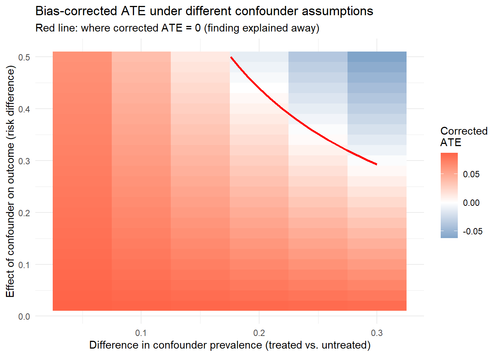
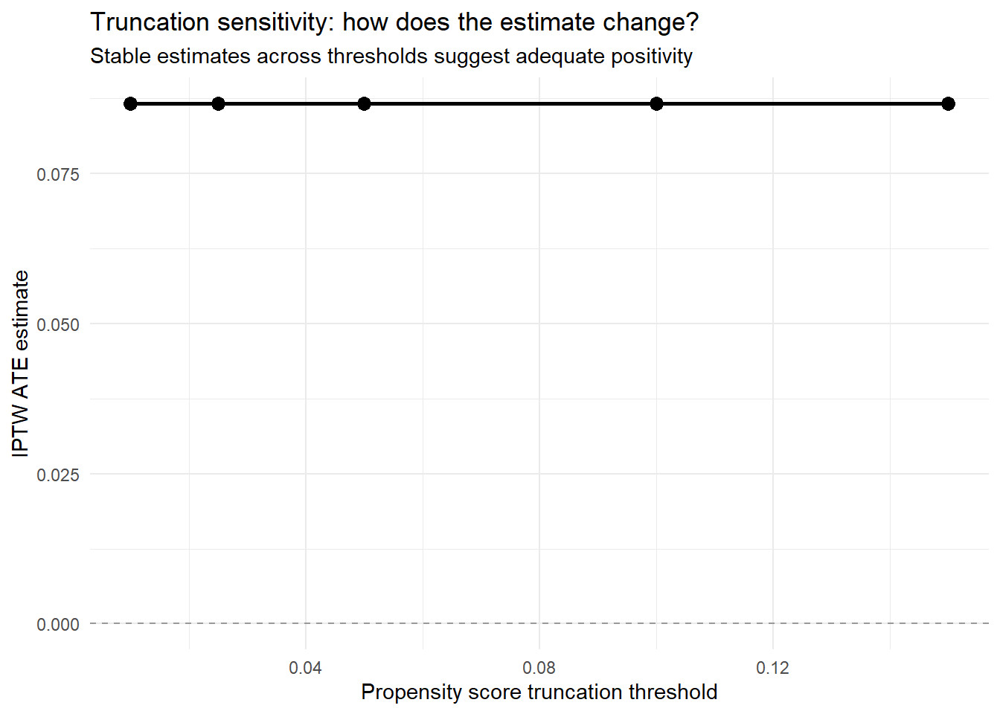

What to do when an assumption might be wrong, or the data cannot support the question
Estimated reading time: 45 minutes
If you only read one thing
A diagnostic tells you something is wrong. Sensitivity analysis tells you how much it would have to be wrong to change your conclusion, and that is the number a reviewer actually wants. Report how strong an unmeasured confounder would need to be, not whether one might exist. When the answer is “not very strong at all”, the honest move is usually to change the estimand rather than to defend the estimate.
Chapter 18 is about detection: propensity scores piling up at zero, a Super Learner that put all its weight on the intercept, an influence curve with three observations driving the point estimate. Those checks can be run and reported, and they either pass or they do not.
This chapter is about the assumptions no diagnostic can check. Exchangeability is not testable. Neither is the absence of informative missingness, nor the claim that the measured covariates capture every common cause. What can be done instead is to ask how far from true an assumption would have to be before the conclusion flips, and to say what the analysis will do when the answer is “not very far”.
Learning objectives
Compute and interpret an E-value, and say what it does not cover
Run a quantitative bias analysis for an unmeasured confounder and read a sensitivity contour
Choose among bias-function, partial-identification, and selection-bias frameworks
Use outcome-blind simulation to find out whether a design could have worked before unmasking the outcome
Decide when to change the estimand rather than the estimator, and document that change
Report a sensitivity analysis so a reader can tell statistical uncertainty from causal uncertainty
The identification assumptions themselves are set out in Chapter 5 and Chapter 6; the diagnostics that detect trouble are in Chapter 18.
19.1 Sensitivity Analysis for Unmeasured Confounding
Because exchangeability cannot be verified from observed data, sensitivity analysis is how we assess how robust a causal conclusion is to potential violations. The question is simple to state: how strong would unmeasured confounding need to be to explain away the observed effect, or to change the conclusion in a meaningful way?
E-values. The E-value, introduced by VanderWeele and Ding (VanderWeele and Ding 2017), provides a simple summary of the minimum strength of association that an unmeasured confounder \(U\) would need to have with both the treatment \(A\) and the outcome \(Y\), conditional on the measured covariates \(W\), to fully explain away the observed treatment-outcome association. For an observed risk ratio \(\text{RR}\), the E-value is defined as:
An E-value of 3.5 means that an unmeasured confounder would need to be associated with at least a 3.5-fold increase in both the probability of treatment and the probability of the outcome, over and above the measured covariates, to pull the observed effect to the null. Compute the E-value for the confidence interval limit closest to the null as well, and you get a measure of how robust the statistical significance is, not just the point estimate, to unmeasured confounding.
E-values come with limitations the analyst should state plainly. They assume a specific form for the confounding bias (the bounding factor of Ding and VanderWeele (Ding and VanderWeele 2016)), which may not hold in every setting. They give a worst-case bound, not a point estimate of the bias, and they say nothing about several unmeasured confounders acting jointly. They also require the effect on the risk ratio scale, which may mean transforming from another scale. When the estimate is on the risk difference scale (as this handbook recommends), convert it to a risk ratio first: given a risk difference \(\text{RD}\) and a baseline risk \(p_0\) under control, compute \(\text{RR} \approx 1 + \text{RD}/p_0\), then apply the E-value formula to this RR.
Quantitative bias analysis. Quantitative bias analysis (QBA) is a more flexible framework. It models the potential bias directly as a function of parameters that describe the unmeasured confounder. The analyst fixes a set of bias parameters, typically the prevalence of the unmeasured confounder \(U\) in the exposed and unexposed groups together with the association between \(U\) and the outcome, then computes the bias-adjusted estimate under each combination of values. Probabilistic QBA goes a step further and places prior distributions over the bias parameters to reflect uncertainty about the unmeasured confounding structure. The R packages episensr and causalsens implement QBA in practice.
The following subsections provide complete worked implementations of these tools, using a simulated pharmacoepidemiologic example.
Two kinds of uncertainty. Every causal estimate from observational data carries two distinct types of uncertainty:
Type
Source
Addressed by
Statistical
Finite sample size
Confidence intervals, standard errors
Causal
Untestable assumptions
Sensitivity analysis
A confidence interval that excludes zero tells you the estimate is unlikely to be due to chance, given that the identification assumptions hold. Sensitivity analysis asks the other question: how badly would those assumptions need to be violated to change the conclusion? Every observational causal analysis should include at least one formal sensitivity analysis.
A simulated pharmacoepi example. The code below generates a running example used throughout this section. An unmeasured confounder (frailty) affects both treatment and outcome, and we pretend it is unavailable.
Show code
library(tidyverse)set.seed(2026)n_sa <-3000# Measured confoundersage_sa <-rnorm(n_sa, 65, 10)cvd_sa <-rbinom(n_sa, 1, plogis(-1.5+0.03* (age_sa -60)))statin_sa <-rbinom(n_sa, 1, 0.4)# Unmeasured confounder (frailty) - simulated but "unobserved"frailty_sa <-rnorm(n_sa, 0, 1)# Treatment model (affected by both measured and unmeasured confounders)A_sa <-rbinom(n_sa, 1, plogis(-0.5+0.02* (age_sa -60) +0.5* cvd_sa +0.3* statin_sa +0.4* frailty_sa))# Outcome model (also affected by unmeasured confounder)Y_sa <-rbinom(n_sa, 1, plogis(-2.5+0.3* A_sa +0.04* (age_sa -60) +0.6* cvd_sa +0.2* statin_sa +0.5* frailty_sa))dat_sa <-tibble(age = age_sa, cvd = cvd_sa, statin = statin_sa,frailty = frailty_sa, A = A_sa, Y = Y_sa)# Analysis ignoring frailty (what the analyst would actually do)ps_sa <-glm(A ~ age + cvd + statin, family = binomial, data = dat_sa)out_sa <-glm(Y ~ A + age + cvd + statin, family = binomial, data = dat_sa)dat1_sa <- dat_sa %>%mutate(A =1)dat0_sa <- dat_sa %>%mutate(A =0)p1_sa <-predict(out_sa, newdata = dat1_sa, type ="response")p0_sa <-predict(out_sa, newdata = dat0_sa, type ="response")naive_ate_sa <-mean(p1_sa - p0_sa)cat("Estimated ATE (ignoring frailty):", round(naive_ate_sa, 4), "\n")
Estimated ATE (ignoring frailty): 0.0878
Computing the E-value. The e_value() function below converts a risk ratio to the corresponding E-value and applies to both the point estimate and the confidence limit closest to the null.
Very weak: almost any unmeasured confounder could explain it
1.5 to 2.0
Moderate: a moderately strong confounder could explain it
2.0 to 3.0
Reasonably robust
> 3.0
Strong: would require a very powerful unmeasured confounder
Context matters. If the E-value is 2.5 but you know that unmeasured lifestyle factors (smoking, exercise) are likely to have risk ratios of 3 or more with both treatment and outcome, the finding is still vulnerable.
E-Value Limitations
E-values are a useful screening tool, but they have important limitations:
They assume a single unmeasured confounder. Multiple weak confounders can jointly produce large bias.
They operate on the risk ratio scale, which may not match your estimand (risk difference).
A large E-value does not prove that unmeasured confounding is absent. It only quantifies the strength required.
E-values cannot replace subject-matter reasoning about what confounders might be missing.
Quantitative bias analysis, worked through. Suppose frailty (binary) is the unmeasured confounder. Drawing on the clinical literature, we hypothesize that frail patients are 15 percentage points more likely to receive treatment (\(p_1 - p_0 = 0.15\)) and that frailty raises the risk of the outcome by 8 percentage points (\(\gamma = 0.08\)).
# A tibble: 3 × 2
Quantity Value
<chr> <dbl>
1 Observed ATE 0.0878
2 Estimated bias 0.012
3 Bias-corrected ATE 0.0758
The exact confounder parameters are unknown, so vary them over a plausible range to trace out a full sensitivity surface:
Show code
# Grid of bias parametersbias_grid_sa <-expand_grid(gamma =seq(0.02, 0.50, by =0.02),delta_p =seq(0.05, 0.30, by =0.05)) %>%mutate(bias = gamma * delta_p,corrected = naive_ate_sa - bias,would_flip = corrected <0 )ggplot(bias_grid_sa, aes(x = delta_p, y = gamma, fill = corrected)) +geom_tile() +geom_contour(aes(z = corrected), breaks =0, color ="red", linewidth =1) +scale_fill_gradient2(low ="steelblue", mid ="white", high ="tomato",midpoint =0, name ="Corrected\nATE") +labs(x ="Difference in confounder prevalence (treated vs. untreated)",y ="Effect of confounder on outcome (risk difference)",title ="Bias-corrected ATE under different confounder assumptions",subtitle ="Red line: where corrected ATE = 0 (finding explained away)" ) +theme_minimal()

Figure 19.1: Bias-corrected ATE across a grid of unmeasured-confounder assumptions. The red contour marks the combinations of confounder-outcome effect and confounder-prevalence difference that would pull the corrected ATE to zero. A finding is robust when the plausible region sits well away from that line.
The red contour line shows combinations of confounder strength that would reduce the corrected ATE to zero. If most plausible combinations fall below and to the left of this line, the finding is reasonably robust.
Truncation sensitivity in code. The code below varies the propensity score truncation threshold and computes the IPTW ATE at each level, returning both a numeric table and a plot.
ggplot(iptw_results_sa, aes(x = truncation, y = ate)) +geom_line(linewidth =1) +geom_point(size =3) +geom_hline(yintercept =0, linetype ="dashed", color ="gray60") +labs(x ="Propensity score truncation threshold",y ="IPTW ATE estimate",title ="Truncation sensitivity: how does the estimate change?",subtitle ="Stable estimates across thresholds suggest adequate positivity" ) +theme_minimal()

Figure 19.2: IPTW ATE estimate as a function of the propensity-score truncation threshold. A flat line indicates the estimate does not hinge on extreme weights; a steep slope signals fragility driven by near-violations of positivity.
Negative controls in code. The following code estimates the “effect” of treatment on a negative control outcome (one that treatment cannot causally affect). A statistically meaningful non-null estimate is evidence of residual bias.
set.seed(2026)# Simulate a negative control outcome (unrelated to treatment A)dat_sa <- dat_sa %>%mutate(neg_control =rbinom(n_sa, 1, plogis(-3+0.03* (age -60) +0.3* cvd +0.4* frailty))# Note: no A term — treatment truly has no effect on this outcome )# Estimate "effect" on negative control using same analysisnc_mod_sa <-glm(neg_control ~ A + age + cvd + statin,family = binomial, data = dat_sa)nc_p1_sa <-predict(nc_mod_sa, newdata = dat1_sa, type ="response")nc_p0_sa <-predict(nc_mod_sa, newdata = dat0_sa, type ="response")nc_effect_sa <-mean(nc_p1_sa - nc_p0_sa)cat("Estimated effect on negative control:", round(nc_effect_sa, 4), "\n")
Estimated effect on negative control: 0.0041
cat("(Should be ~0 if confounding is controlled)\n")
(Should be ~0 if confounding is controlled)
A substantially non-null result on the negative control outcome is empirical evidence that unmeasured confounding (here, frailty) is biasing the analysis.
Missing data and measurement error. Two further threats sit alongside unmeasured confounding, and an analysis that ignores them can be precise and still wrong. Both deserve a sentence in the limitations of any real-world-evidence study, and both can be probed with tools already in this section.
Measurement error means a variable is recorded imperfectly: an exposure inferred from pharmacy fills rather than actual ingestion, an outcome captured only when it triggers a claim, a confounder such as smoking abstracted from incomplete notes. Mismeasuring the outcome or the exposure threatens the consistency assumption. Mismeasuring a confounder leaves residual confounding even when that confounder is nominally adjusted for, because adjustment can only remove the part of the confounding the recorded version captures. When the error is unrelated to the other variables (nondifferential) it often, though not always, biases the effect toward the null; when it is related to them (differential, say an outcome ascertained more completely in treated patients) it can bias in either direction. The quantitative bias analysis introduced above extends directly to misclassification: posit a sensitivity and specificity for the mismeasured variable, ideally from a validation substudy, and propagate the implied bias.
Missing data is the second threat. A complete-case analysis that drops patients with a missing covariate or outcome is unbiased only when data are missing completely at random, which is rarely credible. When missingness depends on measured variables, multiple imputation or inverse-probability-of-missingness weighting recovers an unbiased estimate under that weaker assumption, and the weighting approach reuses the same machinery as the censoring weights for informative dropout (Chapter 26). When missingness depends on unmeasured variables, no method repairs it from the data alone, and the honest response is a sensitivity analysis across plausible missingness mechanisms. A full treatment of imputation and missingness weighting is beyond this handbook, but every applied analysis should state how missing data were handled and what assumption that handling relies on.
19.2 Sensitivity Analysis Frameworks
Sensitivity analysis quantifies how conclusions change when assumptions are relaxed. Section 18.2.1 introduced sensitivity analyses for exchangeability (E-values, quantitative bias analysis, negative controls), but the scope reaches well past unmeasured confounding. This section builds a framework that covers sensitivity to all three identification assumptions, sensitivity to nuisance estimation choices, and the distinction between statistical and causal uncertainty.
19.2.1 Bias Function Sensitivity Analysis
The general framework for sensitivity analysis begins with a formal characterization of the bias that arises when an identification assumption fails. For the average treatment effect under exchangeability, Ding and VanderWeele (Ding and VanderWeele 2016) show that unmeasured confounding can inflate an observed effect by at most a bounding factor determined by two sensitivity parameters. On the log-risk-ratio scale, the maximum bias is:
where \(\gamma_A\) is the maximum ratio by which the prevalence of the unmeasured confounder \(U\) differs between treatment groups, and \(\gamma_Y\) is the maximum risk ratio relating \(U\) to the outcome. Neither parameter can be estimated from the observed data. A sensitivity analysis fixes plausible values for the pair and evaluates the bias, and the bias-corrected estimate, across a range of parameter values.
The bounding-factor framework generalizes the E-value approach, which returns a single summary number, by producing a full surface of bias-adjusted estimates. For each pair of sensitivity parameters \((\gamma_A, \gamma_Y)\) describing the strength of \(U\)’s association with treatment and outcome, compute the bias-adjusted estimate \(\hat{\psi}_{\text{adj}}(\gamma_A, \gamma_Y) = \hat{\psi} - \text{Bias}_{\max}(\gamma_A, \gamma_Y)\). Display the result as a contour plot (Figure 19.3) showing which parameter combinations would change the conclusion, shifting the adjusted estimate to zero or flipping the sign of the effect.
Show code
## Bias function sensitivity analysis## Contour plot of bias-adjusted estimatesgamma_A_grid <-seq(1, 3, by =0.25) ## RR for A|U vs Agamma_Y_grid <-seq(1, 3, by =0.25) ## RR for Y|U vs Ypsi_hat <-0.15## observed estimate (log-RR scale)bias_matrix <-outer(gamma_A_grid, gamma_Y_grid, function(gA, gY) {## Ding-VanderWeele bias bound bias_bound <-log(gA * gY / (gA + gY -1)) psi_hat - bias_bound})## Contour plotcontour(gamma_A_grid, gamma_Y_grid, bias_matrix,xlab =expression(gamma[A] ~"(confounder-treatment RR)"),ylab =expression(gamma[Y] ~"(confounder-outcome RR)"),main ="Bias-Adjusted Estimate Contours",levels =c(-0.1, 0, 0.05, 0.10, 0.15))abline(h =1, v =1, lty =2, col ="gray50")## Identify the null contour (adjusted estimate = 0)cat("Combinations of (gamma_A, gamma_Y) that shift estimate to null:\n")
Combinations of (gamma_A, gamma_Y) that shift estimate to null:
Figure 19.3: Bias-adjusted estimate contours across the sensitivity parameters \(\gamma_A\) (confounder-treatment risk ratio) and \(\gamma_Y\) (confounder-outcome risk ratio). Contours trace where the adjusted estimate crosses the null; parameter combinations beyond the null contour would fully explain away the observed effect.
Read the contour plot by asking whether any plausible combination of \((\gamma_A, \gamma_Y)\) lies on or beyond the null contour. If only implausibly large associations between the confounder and both treatment and outcome would explain away the effect, the finding is robust. If moderate associations suffice, it is fragile and should be read with caution.
19.2.2 Partial Identification and Bounding Approaches
When the identification assumptions are known to fail, or when the analyst is unwilling to assume they hold, partial identification offers an alternative: bounds on the causal effect under minimal assumptions. Where point identification returns a single number for the causal parameter, partial identification returns an interval, the identified set, that contains the true parameter under the maintained assumptions.
The most general bounds, due to Manski (Manski 1990), assume only that the outcome is bounded and that the observed data distribution is known. For a binary outcome \(Y \in \{0, 1\}\) and binary treatment \(A \in \{0, 1\}\), the Manski bounds on the ATE are:
These bounds are wide, often too wide to be informative, because they assume almost nothing. Adding assumptions narrows them: monotone treatment response (the effect is nonnegative for all individuals), monotone treatment selection (individuals with higher potential outcomes are more likely to be treated), or instrumental variable conditions. Each new assumption tightens the bounds but adds a claim that must be defended.
The tradeoff between bound width and assumption strength runs through partial identification. Present bounds under several sets of assumptions, from the weakest (widest bounds) to the strongest (narrowest), so the reader can judge which assumptions they find credible and what conclusions follow.
## Manski bounds for binary outcome## Assuming Y in {0, 1}, A in {0, 1}## dat_sa is the simulated pharmacoepi cohort from earlier in this chapterp_A1 <-mean(dat_sa$A)p_A0 <-1- p_A1E_Y_A1 <-mean(dat_sa$Y[dat_sa$A ==1])E_Y_A0 <-mean(dat_sa$Y[dat_sa$A ==0])## Worst-case bounds (no assumptions beyond bounded outcome)lower_manski <- (E_Y_A1 * p_A1 +0* p_A0) - (E_Y_A0 * p_A0 +1* p_A1)upper_manski <- (E_Y_A1 * p_A1 +1* p_A0) - (E_Y_A0 * p_A0 +0* p_A1)## Bounds under monotone treatment response (ATE >= 0 for all)lower_mtr <-max(0, lower_manski)upper_mtr <- upper_manskicat("== Partial Identification Bounds ==\n")
cat("Point-identified ATE: ", round(E_Y_A1 - E_Y_A0, 3)," (under full exchangeability)\n")
Point-identified ATE: 0.105 (under full exchangeability)
19.2.3 Selection Bias Modeling
Selection bias arises when the study population is a non-random subset of the target population and the selection mechanism depends on the treatment, the outcome, or both. It is conceptually distinct from confounding, since it concerns who is in the study rather than who receives treatment within it, but it can produce similar biases in the estimated treatment effect.
Diagnostics for selection bias start by asking how the study population was assembled. In a cohort study with enrollment criteria that depend on covariates, the selection can be modeled and corrected with inverse probability of selection weighting (IPSW). Estimate \(P(S = 1 \mid W)\), the probability of being selected into the study given covariates \(W\), and weight each observation by \(1 / P(S = 1 \mid W)\) to build a pseudo-population that represents the target population. The IPSW diagnostics parallel those for IPTW: examine the distribution of selection weights, compute the effective sample size, and assess covariate balance between the study population and the target population when external data on the target (census data, registries) are available.
When the selection mechanism depends on the outcome (sicker patients more likely to be lost to follow-up, say), IPSW alone cannot correct the bias without further assumptions. Sensitivity analysis for outcome-dependent selection means modeling the relationship between the outcome and the selection probability, much as with sensitivity analysis for unmeasured confounding.
19.2.4 Sensitivity to Weight Truncation
Section 18.2.2.6 introduced truncation as a response to practical positivity violations and described a truncation sensitivity analysis that reports the causal estimate across a range of thresholds. This section promotes truncation sensitivity to a formal part of the sensitivity analysis framework, on par with sensitivity to unmeasured confounding.
The reason for treating it as a formal sensitivity analysis is that truncation changes the estimand. When propensity scores are clipped to \([\delta, 1-\delta]\), the estimate targets the ATE for a modified population in which the most extreme covariate profiles have been pulled in. The difference between the truncated and untruncated estimates measures how much the extreme-weight observations contribute to the full-population ATE. When that contribution is large, the full-population ATE leans heavily on extrapolation into poorly supported regions, and the truncation sensitivity analysis makes the dependence explicit.
A principled approach reports the full curve of estimates as a function of \(\delta\) rather than a single estimate at a chosen threshold. The curve shows the stability of the estimate: flat means the estimate is insensitive to the extreme-weight observations, while a steep rise or fall means strong sensitivity. Present this curve alongside the E-value and other sensitivity analyses to give a full picture of the finding’s robustness.
Show code
## Full truncation sensitivity curvedelta_grid <-seq(0.001, 0.15, by =0.005)trunc_curve <-data.frame(delta = delta_grid,ATE =NA_real_,SE =NA_real_,n_affected =NA_integer_)for (i inseq_along(delta_grid)) { d <- delta_grid[i] n_aff <-sum(dat$ps < d | dat$ps > (1- d)) trunc_curve$n_affected[i] <- n_aff fit_d <- tmle::tmle(Y = dat$Y, A = dat$A,W = dat[, c("W1", "W2", "W3")],Q.SL.library ="SL.glm",g.SL.library ="SL.glm",gbound = d ) trunc_curve$ATE[i] <- fit_d$estimates$ATE$psi trunc_curve$SE[i] <-sqrt(fit_d$estimates$ATE$var.psi)}library(ggplot2)ggplot(trunc_curve, aes(x = delta, y = ATE)) +geom_ribbon(aes(ymin = ATE -1.96*SE, ymax = ATE +1.96*SE),alpha =0.2) +geom_line() +geom_hline(yintercept =0, linetype ="dashed") +labs(x =expression(delta ~" (truncation threshold)"),y ="Estimated ATE",title ="Truncation Sensitivity Curve") +theme_minimal()
19.2.5 Sensitivity to Learner Library Choice
The Super Learner library is a tuning parameter of the analysis that can move the causal estimate. Section 18.3.1.3 described a library sensitivity analysis as a nuisance model diagnostic. Here the same analysis is reframed as a sensitivity analysis: it quantifies how much the causal conclusion depends on the analyst’s choice of machine learning algorithms for nuisance estimation.
It is most informative combined with the truncation sensitivity analysis. If the estimate is insensitive to both truncation level and library composition, that is strong evidence the result is robust to the nuisance estimation choices. If it is sensitive to one or both, report the range of estimates and acknowledge the model dependence.
A structured approach defines a hierarchy of libraries, from simple to complex: (1) parametric only (GLM, penalized GLM); (2) moderately flexible (add random forests and boosting); (3) highly flexible (add neural networks, highly adaptive lasso, or other nonparametric methods). The causal estimate under each library gives a point on the sensitivity curve. If the estimate stabilizes as the library grows more flexible, the flexible learners are converging on the true nuisance functions. If it keeps moving, none of the libraries estimates the nuisance functions well, and the causal conclusion is uncertain.
A concrete example runs three TMLE fits, each with a different library specification, on the simulated pharmacoepi cohort built earlier in this chapter, and lays the estimates side by side:
# A tibble: 3 × 5
Library ATE SE CI_lower CI_upper
<chr> <dbl> <dbl> <dbl> <dbl>
1 Minimal 0.0871 0.0131 0.0614 0.113
2 Standard 0.0880 0.0131 0.0624 0.114
3 Aggressive 0.0881 0.0131 0.0625 0.114
19.2.6 Separating Statistical and Causal Uncertainty
A confidence interval captures statistical uncertainty: the variability of the estimate due to sampling a finite number of observations from a fixed population. It answers the question, “If we repeated this study with new data from the same population, how much would the estimate vary?” Statistical uncertainty decreases with sample size and approaches zero as \(n \to \infty\).
Causal uncertainty, by contrast, reflects the analyst’s inability to verify the identification assumptions from observed data. Even with an infinitely large sample, the causal interpretation of the estimate rests on assumptions (exchangeability, positivity, consistency) that cannot be checked empirically. Causal uncertainty is captured not by confidence intervals but by sensitivity analyses: E-values, quantitative bias analysis, truncation sensitivity, and partial identification bounds.
The distinction between the two matters for honest reporting. A 95% confidence interval of \((0.10, 0.30)\) says the statistical estimand is estimated with reasonable precision. It says nothing about whether the statistical estimand equals the causal parameter. A sensitivity analysis showing that an unmeasured confounder with associations of magnitude 2.5 would explain the estimate away answers a different, complementary question.
The analyst should present both types of uncertainty explicitly. A recommended format is: “The estimated treatment effect is \(\hat{\psi} = 0.20\) (95% CI: 0.10, 0.30), indicating statistical precision. Under the identification assumptions (exchangeability, positivity, consistency), this estimates the average causal effect. The E-value for the point estimate is 2.8, indicating that an unmeasured confounder would need to be associated with both treatment and outcome by a factor of at least 2.8 to explain away the observed effect. The truncation sensitivity analysis shows the estimate is stable across truncation thresholds from 0.01 to 0.10 (range: 0.18 to 0.21).”
This format makes explicit which aspects of the conclusion are supported by the data (statistical precision), which depend on untestable assumptions (causal interpretation), and how robust the causal interpretation is to violations of those assumptions (sensitivity analyses).
19.3 Simulation-Based Design Diagnostics
Design diagnostics are conducted before the outcome data are analyzed, or ideally before they are accessed at all, using the treatment and covariate data to assess whether the planned analysis can credibly estimate the target causal parameter. This section develops a formal framework for simulation-based design diagnostics that addresses a real limitation of the diagnostics in earlier sections: most of those in Section 18.2 through Section 18.5 are computed after the analysis is complete and so cannot tell you whether the analysis should have been attempted at all. Design diagnostics fill the gap with prospective evidence about estimator performance under plausible conditions.
The central idea is simple. Use the observed covariate and treatment data to calibrate a family of data-generating processes (DGPs) that are consistent with what is known about the study design. Each DGP specifies a plausible outcome-generating mechanism. Draw many simulated datasets from each DGP, apply the planned estimator to each, and evaluate the resulting bias, variance, coverage, and power. Strong performance across a range of plausible DGPs is reason to trust the planned analysis. Poor performance gives you the chance to modify the estimand, the estimator, or the study design before committing.
19.3.1 Outcome-Blind Simulation
What sets design diagnostics apart from ordinary simulation studies is that the outcome data play no part in building the simulation DGPs. This separation keeps the pre-specified analysis plan honest. Once the observed outcomes calibrate the DGP, the simulation stops being a prospective diagnostic and becomes a retrospective assessment, and any resulting changes to the analysis plan are data-driven in a way that can undo the pre-specification.
In practice, outcome-blind simulation proceeds in three steps.
Step 1: Characterize the treatment mechanism. The analyst fits a model for \(P(A \mid W)\) using the observed treatment and covariate data. This model captures the key features of the study design: which covariates drive treatment assignment, how much overlap exists between treatment groups, and where positivity violations are most severe.
Step 2: Specify plausible outcome-generating mechanisms. The analyst defines a family of outcome models \(E[Y \mid A, W]\) that span the range of plausible relationships between the covariates, treatment, and outcome. These models should be informed by subject-matter knowledge and prior studies, not by the observed outcomes. The family should include both simple models (main effects only) and complex models (interactions, nonlinearities) to assess how robust the estimator is to model complexity.
Step 3: Simulate and evaluate. For each outcome model in the family, the analyst generates simulated outcomes using the observed covariates and treatments (or covariates and treatments drawn from the fitted treatment model), applies the planned estimator, and records the results.
## Outcome-blind design diagnostics## Step 1: Fit treatment model using only observed (A, W) datag_model <- SuperLearner::SuperLearner(Y = dat$A,X = dat[, c("W1", "W2", "W3")],family =binomial(),SL.library =c("SL.glm", "SL.glmnet", "SL.ranger"))ps_hat <-predict(g_model, type ="response")$pred## Step 2: Define a family of plausible outcome models## (Outcome data NOT used here - parameters from prior knowledge)generate_outcome <-function(A, W, scenario) {if (scenario =="simple_linear") { mu <-0.3* A +0.5* W$W1 -0.2* W$W2 } elseif (scenario =="interaction") { mu <-0.3* A +0.5* W$W1 -0.2* W$W2 +0.4* A * W$W1 } elseif (scenario =="nonlinear") { mu <-0.3* A +sin(W$W1) +0.3* W$W2 * W$W1^2 } elseif (scenario =="null") { mu <-0.5* W$W1 -0.2* W$W2 } Y <- mu +rnorm(length(A), sd =0.5)return(Y)}## Step 3: Evaluate estimator performancescenarios <-c("simple_linear", "interaction", "nonlinear", "null")B <-300design_results <-data.frame(scenario =character(),true_ATE =numeric(),bias =numeric(),empirical_SE =numeric(),mean_SE =numeric(),coverage =numeric(),power =numeric(),stringsAsFactors =FALSE)for (sc in scenarios) { ates <- se_ests <- covers <-numeric(B)## Compute true ATE under this scenario Y1_true <-generate_outcome(rep(1, nrow(dat)), dat[, c("W1","W2","W3")], sc) Y0_true <-generate_outcome(rep(0, nrow(dat)), dat[, c("W1","W2","W3")], sc)## (The noise cancels in expectation, so use the means) true_ate <-mean(generate_outcome(rep(1, nrow(dat)), dat[, c("W1","W2","W3")], sc)) -mean(generate_outcome(rep(0, nrow(dat)), dat[, c("W1","W2","W3")], sc))for (b in1:B) { Y_sim <-generate_outcome(dat$A, dat[, c("W1","W2","W3")], sc) fit <- tmle::tmle(Y = Y_sim, A = dat$A,W = dat[, c("W1", "W2", "W3")],Q.SL.library ="SL.glm",g.SL.library ="SL.glm") ates[b] <- fit$estimates$ATE$psi se_ests[b] <-sqrt(fit$estimates$ATE$var.psi) ci <- fit$estimates$ATE$CI covers[b] <- (ci[1] <= true_ate) & (ci[2] >= true_ate) } design_results <-rbind(design_results, data.frame(scenario = sc,true_ATE =round(true_ate, 3),bias =round(mean(ates) - true_ate, 4),empirical_SE =round(sd(ates), 4),mean_SE =round(mean(se_ests), 4),coverage =round(mean(covers), 3),power =round(mean(abs(ates / se_ests) >1.96), 3) ))}cat("== Outcome-Blind Design Diagnostics ==\n")print(design_results, row.names =FALSE)
19.3.2 Bias Under Plausible Data-Generating Processes
Choosing the outcome-generating mechanisms in the simulation family is the most consequential design decision in outcome-blind diagnostics. Build the family to span your genuine uncertainty about the outcome process, not to confirm that the planned analysis works under favorable conditions. That means including DGPs where the outcome model is misspecified, where treatment effect heterogeneity is present, and where the covariate-outcome relationship is more complex than the Super Learner library can capture.
A useful way to build the family is to parameterize the outcome model in terms of features known to affect estimator performance: the degree of treatment effect heterogeneity, the complexity of the outcome surface, the signal-to-noise ratio, and the strength of confounding. Vary these parameters across a grid and evaluate estimator performance at each point. The resulting performance surface shows which features of the DGP matter most for reliability and where the boundaries of reliable estimation lie.
One especially important class of DGPs is calibrated to prior studies or domain knowledge. If earlier studies estimated the treatment effect in a similar population, their results can inform the magnitude and heterogeneity of the effect in the simulation. If subject-matter experts have views on the likely outcome model complexity, translate those into specific DGP specifications. The more closely the simulation DGPs track the actual data-generating process (subject to not using the observed outcomes), the more the design diagnostics will tell you.
19.3.3 Support Stress Testing
Support stress testing systematically dials up the severity of positivity violations in the simulated data to find the threshold at which estimator performance breaks down. It works by modifying the treatment mechanism to produce progressively more extreme propensity scores while holding the outcome model fixed.
The simplest lever is the coefficient on a key confounder in the propensity score model. If the true treatment model is \(\text{logit}(P(A=1 \mid W)) = \alpha_0 + \alpha_1 W_1\), the stress test evaluates estimator performance as \(\alpha_1\) moves from its observed value (which reproduces the observed propensity score distribution) to larger values (which sharpen the propensity scores and worsen the positivity violations). The resulting performance curve shows how bias, RMSE, and coverage degrade as the violations intensify, and it marks the level at which the estimator becomes unreliable.
## Support stress testingstress_levels <-c(1.0, 1.5, 2.0, 2.5, 3.0, 4.0, 5.0)## stress_level = 1.0 corresponds to the observed treatment mechanism## higher values amplify the confounder effect on treatmentstress_results <-data.frame(stress = stress_levels,min_ps =NA_real_,ess_ratio =NA_real_,bias =NA_real_,coverage =NA_real_)for (s_idx inseq_along(stress_levels)) { s <- stress_levels[s_idx] B_stress <-200 ates <- covers <-numeric(B_stress) true_ate <-0.5for (b in1:B_stress) {## Generate treatment with amplified confounding ps_stressed <-plogis(-0.5+ s *0.4* dat$W1 + s *1.5* dat$W2 + s *0.3* dat$W3) A_stress <-rbinom(nrow(dat), 1, ps_stressed)## Generate outcome (fixed mechanism) Y_stress <- true_ate * A_stress +0.8* dat$W1 -0.3* dat$W2 +rnorm(nrow(dat), sd =0.5) fit <- tmle::tmle(Y = Y_stress, A = A_stress,W = dat[, c("W1", "W2", "W3")],Q.SL.library ="SL.glm",g.SL.library ="SL.glm") ates[b] <- fit$estimates$ATE$psi ci <- fit$estimates$ATE$CI covers[b] <- (ci[1] <= true_ate) & (ci[2] >= true_ate) } stress_results$min_ps[s_idx] <-round(min(ps_stressed), 4) stress_results$ess_ratio[s_idx] <-round(sum(1/ps_stressed)^2/sum(1/ps_stressed^2) /nrow(dat), 3) stress_results$bias[s_idx] <-round(mean(ates) - true_ate, 4) stress_results$coverage[s_idx] <-round(mean(covers), 3)}cat("== Support Stress Test ==\n")print(stress_results, row.names =FALSE)cat("\nIdentify the stress level at which coverage drops below 0.90\n")cat("and relate this to the observed propensity score distribution.\n")
The key output of the stress test is a “reliability frontier”: the level of positivity violation beyond which the estimator’s performance is no longer acceptable. If the observed propensity score distribution sits inside the reliable region, that is reassuring. If it sits outside, you know before seeing any results that the planned analysis is likely to produce unreliable estimates, and you can change the estimand or the estimation strategy.
19.3.4 Sample Size Diagnostics Under TMLE
Traditional sample size calculations for treatment effect estimation assume parametric models and compute the sample size needed for a desired power at a specified significance level, usually from the formula \(n = (z_{\alpha/2} + z_{\beta})^2 \sigma^2 / \delta^2\), where \(\sigma^2\) is the outcome variance and \(\delta\) is the minimum detectable effect size. For semiparametric estimators like TMLE this formula can fall short in two ways. The variance of the TMLE estimator depends on the quality of the nuisance function estimates, which itself depends on the sample size, a circularity the simple formula ignores. And the efficiency of TMLE relative to simpler estimators depends on the data-generating process in ways that cannot be known a priori.
Simulation-based sample size diagnostics handle both problems. Specify a target effect size and a family of plausible DGPs, run the planned analysis across a range of sample sizes (\(n = 100, 200, 500, 1000, 2000\), for example), and record power, bias, and coverage at each. The resulting power curve gives the minimum sample size that reaches the desired power, accounting for the specific properties of TMLE and the characteristics of the data at hand.
The simulation-based approach also shows whether the TMLE-specific variance differs substantially from the parametric variance. If the Super Learner reaches near-parametric rates of nuisance estimation, the TMLE variance sits close to the semiparametric efficiency bound, and the sample size requirement resembles the parametric calculation. If the nuisance estimation is less efficient (because the data-generating process is complex and the Super Learner library is limited), the TMLE variance is larger, and a correspondingly larger sample is needed.
19.3.5 Regulatory Relevance of Design Diagnostics
Design diagnostics are especially relevant for regulatory submissions involving real-world evidence (RWE), where the credibility of the analysis must be established before the results are known. The FDA, the EMA, and other agencies have increasingly stressed pre-specified analysis plans and design assessments for observational studies meant to support regulatory decisions.
The ICH E9(R1) framework for estimands in clinical trials was developed for randomized experiments, but its conceptual foundation applies equally to observational studies. It requires the estimand to be specified before the analysis and the analysis plan to spell out how intercurrent events, missing data, and other complications will be handled. Design diagnostics extend the framework by supplying empirical evidence that the planned estimand and estimator fit the study data.
A design diagnostic report suitable for regulatory submission should include: (1) a description of the treatment mechanism model and the observed propensity score distribution, demonstrating that positivity is adequate; (2) a simulation study showing that the planned estimator achieves acceptable bias, coverage, and power under a range of plausible DGPs; (3) a stress test showing the level of positivity violation at which estimator performance degrades; and (4) a pre-specified adaptation plan describing how the analysis will be modified if the diagnostics reveal problems. This report should be finalized and registered before the outcome data are accessed, which gives a transparent and auditable record of the analysis design decisions.
Pre-Registration of Design Diagnostics
For maximum credibility, design diagnostics should be pre-registered as part of the statistical analysis plan (SAP). The SAP should specify:
The Super Learner library to be used for nuisance estimation
The truncation threshold for propensity scores (or a data-adaptive procedure for selecting it)
The minimum effective sample size below which the estimand will be modified
The adaptation rules: what specific modifications will be made to the estimand, and under what diagnostic conditions
The simulation scenarios to be used for design assessment, including the outcome-generating mechanisms and the performance thresholds
Pre-registering these elements ensures that the diagnostic-driven adaptations are principled rather than ad hoc, and that they cannot be mistaken for outcome-driven modifications.
19.4 Estimand Adaptation When Diagnostics Fail
Sometimes the diagnostics in the preceding sections reveal that the intended causal estimand is not credibly supported by the available data. Severe positivity violations, unstable nuisance function estimates, extreme influence curve values, or poor simulation performance all say the same thing: the gap between the causal question and the statistical answer is too wide for the data to bridge reliably. When this happens, the analyst faces a choice: proceed with the original analysis and acknowledge its limitations, or modify the analysis to target an estimand the data can support. This section provides a structured framework for the second path.
19.4.1 Changing the Estimand Versus Changing the Estimator
The most important conceptual distinction in this section separates changing the estimator from changing the estimand. These are different responses to a diagnostic failure, and conflating them is a common source of confusion.
Changing the estimator means picking a different algorithm to target the same statistical quantity. Switching from IPTW to TMLE changes the procedure but not the estimand: both target \(E_W[E[Y \mid A=1, W] - E[Y \mid A=0, W]]\), the marginal average treatment effect. If the trouble is that the data do not support this estimand, because positivity fails in certain regions of the covariate space, changing the estimator does not fix it. TMLE may ease the symptoms, producing a more stable point estimate through the targeting step, but the underlying problem persists: the counterfactual contrast is not identified in parts of the population. The result can look better (smaller standard errors, no extreme weights) without being better (the estimate is no more credible as a causal quantity).
Changing the estimand means modifying the causal question itself so that the new question is one the data can answer. Restricting the target population to the overlap region changes the question from “what is the effect for everyone?” to “what is the effect for those who could plausibly receive either treatment?” This is a genuine resolution: the new estimand is identified, positivity holds for the restricted population, and the resulting estimate has a clear causal interpretation.
Always consider first whether the diagnostic failure can be resolved by changing the estimand, rather than reaching for technical fixes (truncation, stabilization, alternative estimators) that paper over the underlying problem. Technical fixes have their place when the violations are mild and the resulting bias is small next to the statistical uncertainty, but they should not be the default response to an identification failure.
19.4.2 Decision Framework for Estimand Adaptation
The following decision framework maps specific diagnostic findings to specific adaptation strategies. It is a sequence of questions to work through in order, each one leading to a particular adaptation when the answer indicates a problem.
Question 1: Does the target population include individuals for whom treatment is impossible or extremely unlikely?
If the propensity score diagnostics (Section 18.2.2) show that a nontrivial fraction of the target population has propensity scores near zero or one, consider restricting the target population to the overlap region, the set of individuals with \(\delta \leq \hat{g}(1 \mid W_i) \leq 1 - \delta\) for a pre-specified threshold \(\delta\). The resulting estimand is the ATE for the overlap population, a different and more modest causal quantity than the full-population ATE, but one that is identified and estimable.
The choice of \(\delta\) is a bias-variance tradeoff. A more aggressive restriction (larger \(\delta\)) buys a more stable estimate but targets a smaller and potentially less generalizable population. Report results for several values of \(\delta\) and check how sensitive the estimate and its interpretation are to the choice.
## Population restriction based on overlapthresholds <-c(0.01, 0.025, 0.05, 0.10)for (delta in thresholds) { in_overlap <- dat$ps >= delta & dat$ps <= (1- delta) dat_restricted <- dat[in_overlap, ] fit_restricted <- tmle::tmle(Y = dat_restricted$Y, A = dat_restricted$A,W = dat_restricted[, c("W1", "W2", "W3")],Q.SL.library =c("SL.glm", "SL.ranger"),g.SL.library =c("SL.glm", "SL.ranger") )cat(sprintf("delta = %.3f: n = %d (%.0f%%), ATE = %.4f, SE = %.4f, 95%% CI: [%.4f, %.4f]\n", delta, nrow(dat_restricted),100*nrow(dat_restricted) /nrow(dat), fit_restricted$estimates$ATE$psi,sqrt(fit_restricted$estimates$ATE$var.psi), fit_restricted$estimates$ATE$CI[1], fit_restricted$estimates$ATE$CI[2]))}
Question 2: Is the treatment definition well-specified, or does it conflate distinct interventions?
If consistency diagnostics (Section 18.2.3) reveal that the treatment variable conflates multiple interventions with potentially different effects, consider redefining the treatment. Options include refining the treatment variable (distinguishing different drugs within a class), coarsening it (combining similar doses into a single level), or restricting the analysis to a specific treatment version.
Question 3: Is the static intervention plausible for all individuals?
If the scientific question involves a static intervention (“set \(A = 1\) for everyone”) but the data suggest that intervention is infeasible for some individuals (a medication contraindicated for a subgroup, say), consider switching to a modified treatment policy or a stochastic intervention. A modified treatment policy defines the intervention as a shift from the natural treatment value, such as \(d(A, W) = A + \delta\) for a continuous exposure. Because it is defined relative to each individual’s actual treatment, rather than forcing everyone onto the same level, it respects the observed support.
For binary treatments, the stochastic intervention analog defines the intervention as an increase or decrease in the probability of treatment: instead of “set \(A = 1\),” the intervention is “increase \(P(A = 1 \mid W)\) by \(\delta\).” This can be estimated using the lmtp package and avoids the structural positivity violations that arise when \(P(A = 1 \mid W = w) = 0\) for some \(w\).
Question 4: Is the marginal effect the appropriate target, or should conditional effects be considered?
If the population-level ATE is poorly supported but the data support certain subgroups well, consider targeting the conditional average treatment effect (CATE) for those subgroups rather than the marginal ATE. This is especially relevant when treatment effect heterogeneity is expected and the scientific question can be answered by understanding effects within subgroups rather than averaging across the whole population.
Question 5: Is the longitudinal estimand feasible, or should the time horizon be shortened?
In longitudinal settings, positivity violations compound over time (Section 18.6.2). If the cumulative weight diagnostics reveal that the planned time horizon produces unacceptable weight variability, consider shortening the horizon or switching to a dynamic or stochastic intervention compatible with the observed treatment patterns at each time point.
19.4.3 Mapping Diagnostics to Adaptations
The following table summarizes the relationship between diagnostic findings and recommended adaptations.
Diagnostic Finding
Primary Concern
Recommended Adaptation
Propensity scores near 0 or 1
Positivity violation
Restrict population or switch to MTP
ESS ratio < 0.5
Extreme weights
Restrict population or use stabilized weights
Clever covariate \(|H| > 50\)
TMLE instability
Investigate source; restrict or redefine estimand
EIF dominated by few observations
Fragile estimate
Restrict population or apply C-TMLE
Truncation sensitivity > 20%
Support-dependent estimate
Report range; consider MTP
Library sensitivity > 20%
Model-dependent estimate
Expand library; consider simpler estimand
Time-specific PS near boundaries
Longitudinal positivity
Shorten time horizon or use MTP
Cumulative weights > 1000
Compounded violations
Shorten time horizon; use LTMLE
Bootstrap/IF SE ratio > 1.5
Unreliable inference
Use bootstrap CI; consider CV-TMLE
Coverage < 0.90 in simulation
Finite-sample failure
Increase sample size or simplify estimand
19.4.4 Documenting Estimand Changes
When the analysis plan is modified in response to diagnostic findings, the rationale for the modification must be documented transparently. The analyst should report: (1) the original estimand and why it was chosen; (2) the diagnostic findings that indicated the original estimand was not well-supported; (3) the specific quantitative thresholds that triggered the adaptation; (4) the modified estimand and why it is more appropriate given the data; and (5) the results under both the original and modified estimands, if the original analysis was conducted despite the diagnostic concerns.
This documentation serves two purposes. It gives reviewers and regulators a transparent audit trail for judging whether the modification was principled or opportunistic. And it forces the analyst to articulate the link between the diagnostic findings and the adaptation, which is itself a form of quality control.
When the adaptation rules are pre-specified in the statistical analysis plan (Section 19.3.5), the documentation is simpler: report which pre-specified rule was triggered and confirm that the adaptation followed the plan. When the adaptation is not pre-specified, the documentation must go further, and the analyst should acknowledge that the modification was data-driven and may color the interpretation of the results.
Sensitivity analysis matters especially for the HAART cohort. The measured confounders (age, sex, and cd4.sqrt) capture key drivers of treatment decisions and mortality, but several plausible confounders are absent from the data. Medication adherence, WHO clinical staging, and socioeconomic factors all plausibly influence both the decision to initiate HAART (haartind) and the risk of death (event). A strong enough unmeasured variable of this kind could bias the estimated treatment effect.
The E-value framework lets us quantify how strong such confounding would need to be. Suppose a prior analysis (using g-computation, IPTW, or TMLE) estimates a protective risk ratio of about 0.70 for HAART on mortality.
# Suppose the estimated risk ratio for HAART on mortality is:# RR = 0.70 (protective). The E-value quantifies robustness.rr_haart <-1/0.70e_val_haart <- rr_haart +sqrt(rr_haart * (rr_haart -1))cat("E-value for HAART mortality estimate:", round(e_val_haart, 2), "\n")
E-value for HAART mortality estimate: 2.21
# Interpretation: an unmeasured confounder (e.g., adherence) would need# to be associated with both HAART initiation and mortality by a risk# ratio of at least this magnitude to fully explain away the result.
Adherence is the most plausible unmeasured confounder here. Patients who adhere to HAART tend to be healthier and more engaged with care, which could inflate the apparent treatment benefit. The quantitative bias analysis from Chapter 18 applies directly: specify plausible values for adherence prevalence among treated and untreated patients, and for the effect of adherence on mortality, then compute a bias-corrected estimate. If the corrected estimate stays protective, the finding is more credible. The truncation sensitivity analysis is relevant too, since patients with very low or very high propensity for HAART initiation (driven by extreme CD4 values or dropout patterns) can produce unstable weights.
19.6 Reporting Recommendations
The diagnostics in this chapter earn their keep only if they are reported transparently and interpreted honestly. A treatment effect estimate without diagnostics is, at best, incomplete and, at worst, misleading. This section gives structured guidance for reporting diagnostics in scientific publications, regulatory submissions, and internal analysis reports, organized into five categories: minimum required diagnostics, essential plots and tables, documentation of estimator tuning, presentation of sensitivity analyses, and communication of limitations.
19.6.1 Minimum Required Diagnostics
Every analysis that uses TMLE, AIPW, IPTW, or any other semiparametric causal estimator should report, at minimum, the following diagnostics.
Identification assumption diagnostics. The analysis report should include: (1) a DAG or a narrative description of the assumed causal structure, with explicit identification of the measured confounders and a discussion of the most plausible unmeasured confounders; (2) propensity score distributions showing overlap between treatment groups; (3) a summary of positivity diagnostics (minimum propensity score, fraction of observations near the boundaries, effective sample size); and (4) at least one sensitivity analysis for unmeasured confounding (E-value, quantitative bias analysis, or negative control analysis).
Nuisance model diagnostics. The report should include: (1) the Super Learner library used for both the outcome regression and the treatment mechanism, with cross-validated risk and learner weights; (2) covariate balance diagnostics (standardized mean differences before and after weighting, or equivalent for TMLE); and (3) a summary of outcome model calibration.
Estimator diagnostics. The report should include: (1) the influence curve distribution summary (mean, standard deviation, skewness, kurtosis, maximum); (2) the difference between the initial plug-in estimate and the targeted estimate (for TMLE); and (3) truncation sensitivity showing the estimate at multiple truncation thresholds.
These minimum requirements apply to all analyses. For work intended for high-impact publications or regulatory submissions, report additional diagnostics from Section 18.5 through Section 19.2 as appropriate.
19.6.2 Essential Plots and Tables
The following plots and tables should be included in the main text or supplementary materials of any causal inference analysis.
Propensity score density plot. Overlapping density plots of the estimated propensity score for each treatment group, with annotations showing the fraction of observations near the boundaries. This is the single most important visual diagnostic for positivity and overlap.
Covariate balance plot (Love plot). A plot showing the absolute standardized mean difference for each covariate before and after adjustment (weighting, matching, or TMLE). The plot should include a reference line at SMD = 0.1 and should display both marginal balance and (if feasible) balance for key interactions or nonlinear terms.
Truncation sensitivity plot. A plot showing the point estimate and 95% confidence interval as a function of the truncation threshold \(\delta\). This plot makes the dependence of the estimate on extreme observations visually explicit.
Super Learner coefficient table. A table reporting the cross-validated risk and the ensemble coefficient for each candidate learner in the library, separately for the outcome regression and the treatment mechanism.
Influence curve distribution. A histogram or density plot of the estimated influence curve values, annotated with the mean, standard deviation, skewness, and kurtosis. This plot reveals the shape of the estimator’s sampling distribution and can identify departures from normality that affect the validity of confidence intervals.
Calibration plot. For the outcome regression: predicted versus observed values (for continuous outcomes) or predicted versus observed event rates within deciles (for binary outcomes). This plot assesses the most directly relevant aspect of outcome model fit for the causal estimator.
Show code
## Generate a summary diagnostics panel## This function produces the essential diagnostic plots in a single figurecreate_diagnostic_panel <-function(dat, tmle_fit, ps) {library(ggplot2)library(gridExtra) IC <- tmle_fit$estimates$ATE$IC## 1. Propensity score overlap p1 <-ggplot(dat, aes(x = ps, fill =factor(A))) +geom_density(alpha =0.4) +labs(x ="Propensity Score", y ="Density",fill ="Treatment", title ="PS Overlap") +theme_minimal() +theme(legend.position ="bottom")## 2. Influence curve distribution p2 <-ggplot(data.frame(IC = IC), aes(x = IC)) +geom_histogram(bins =50, fill ="steelblue", alpha =0.7) +geom_vline(xintercept =0, linetype ="dashed") +labs(x ="Influence Curve Value", y ="Count",title =paste0("Influence Curve (skew=",round(moments::skewness(IC), 2), ")")) +theme_minimal()## 3. Weight distribution wt <-ifelse(dat$A ==1, 1/ps, 1/(1-ps)) p3 <-ggplot(data.frame(wt = wt), aes(x =log10(wt))) +geom_histogram(bins =40, fill ="coral", alpha =0.7) +labs(x ="log10(IP Weight)", y ="Count",title =paste0("Weights (ESS ratio=",round(sum(wt)^2/sum(wt^2)/length(wt), 2), ")")) +theme_minimal()## 4. Q-Q plot for influence curve p4 <-ggplot(data.frame(IC = IC), aes(sample = IC)) +stat_qq() +stat_qq_line(color ="red") +labs(title ="IC Normal Q-Q Plot") +theme_minimal() gridExtra::grid.arrange(p1, p2, p3, p4, nrow =2)}
19.6.3 Documenting Estimator Tuning
The replicability of a causal analysis depends on complete documentation of the estimation procedure. The following information should be reported in the methods section or a supplementary technical appendix.
Super Learner specification. The complete list of candidate learners in the library, including their tuning parameters (e.g., SL.ranger with num.trees = 500, mtry = 3, min.node.size = 10). The number of cross-validation folds and the metalearner (NNLS, solnp, or other) used to combine the candidates. Whether screening was applied and, if so, which screening algorithm.
Truncation and bounding. The truncation threshold \(\delta\) applied to propensity scores, or the gbound parameter in the tmle package. Whether truncation was pre-specified or selected based on the data.
Cross-fitting. Whether cross-fitting was used (and if so, how many folds), or whether the standard (non-cross-fitted) TMLE was applied. If CV-TMLE was used, the number of outer folds.
Software and versions. The R (or other language) version, the package versions for tmle, SuperLearner, lmtp, drtmle, or other key packages, and any custom code used for diagnostics or estimation. This information is essential for computational reproducibility and should be reported even when it seems obvious, because package behavior can change across versions.
Deviations from the pre-specified plan. If the analysis deviated from the original statistical analysis plan, for example, if the Super Learner library was modified based on diagnostic findings, or if the truncation threshold was adjusted, each deviation should be documented with the rationale.
19.6.4 Presenting Sensitivity Analyses
Sensitivity analyses should be presented in a structured format that makes clear (1) what assumption is being relaxed, (2) what range of departures from the assumption is being considered, and (3) how the conclusion changes across that range. A recommended reporting structure follows.
E-values. Report the E-value for both the point estimate and the confidence interval limit closest to the null. Interpret the E-value in context: compare the required confounder strength to the known strength of measured confounders. For example: “The E-value of 3.2 for the point estimate means that an unmeasured confounder associated with both treatment and outcome by a risk ratio of at least 3.2 would be needed to explain away the observed effect. Among measured confounders, the strongest association with treatment is for confounder \(W_3\) (RR = 1.8), suggesting that the required unmeasured confounding would need to be substantially stronger than any measured confounder.”
Quantitative bias analysis. Report the distribution of bias-adjusted estimates under the assumed prior distributions on the bias parameters. A forest plot showing the original estimate, the median bias-adjusted estimate, and the 95% interval of bias-adjusted estimates provides a visual summary.
Negative control results. Report the estimated effect on the negative control outcome (or the estimated effect of the negative control exposure on the primary outcome), with the same adjustment set and estimation procedure used for the primary analysis. A null finding on the negative control supports (but does not prove) the validity of the exchangeability assumption.
Truncation sensitivity. Report the truncation sensitivity curve (Section 19.2.4), with the range of estimates annotated.
Library sensitivity. Report the causal estimate under each Super Learner library specification examined.
All sensitivity analyses should be presented together so the reader can form a composite assessment of the robustness of the finding. A forest plot or summary table that displays the point estimate and confidence interval under the primary analysis and each sensitivity analysis variant provides a compact and informative summary.
19.6.5 Communicating Limitations and Causal Conclusions
The interpretation section of a causal inference analysis should address the strength and limitations of the causal claim head-on. Avoid two common errors: overstating the evidence (“our study proves the treatment causes the outcome”) and understating it (“this is merely an observational study and no causal conclusions can be drawn”).
A more accurate framing acknowledges the strength of the evidence while being transparent about its limits. The following template is a starting point:
“Under the assumptions of conditional exchangeability (no unmeasured confounding given the measured covariates \(W\)), positivity (adequate overlap between treatment groups), and consistency (a well-defined intervention), our analysis estimates that [treatment] causes a [direction and magnitude] change in [outcome]. The identification assumptions cannot be verified from the observed data, but the following diagnostic evidence supports their plausibility: [cite specific diagnostics]. The sensitivity analysis indicates that the finding is robust to unmeasured confounding of moderate strength (E-value = [value]) and to weight truncation across a range of thresholds [range]. The main limitation is [specific threat identified by diagnostics], which could bias the estimate in the direction of [direction if known].”
This framing does several things at once. It makes the identification assumptions explicit, so the reader knows exactly what is being assumed. It cites specific diagnostic evidence instead of asserting the assumptions without support. It quantifies the finding’s robustness through sensitivity analyses. And it names the single threat the analyst considers most concerning, rather than offering a generic disclaimer.
Diagnostic Reporting Checklist
Before submitting a causal inference analysis, verify that the following items are reported:
Identification
Nuisance Estimation
Estimator Performance
Sensitivity
Transparency
19.7 Reporting and governance toolkit
Beyond model diagnostics, credible RWE analyses need structured reporting that enables external review. The frameworks below provide standardized templates; select the one or ones most relevant to your study type and regulatory context.
In regulatory submissions, the FDA expects that RWE studies document data provenance, cohort selection rationale, variable definitions, and analysis code in sufficient detail for independent reproduction (U.S. Food and Drug Administration 2018, 2023).
19.8 Check your understanding
Q1. Your TMLE estimate has an E-value of 1.3. A reviewer asks whether this is robust to unmeasured confounding. What do you say?
An E-value of 1.3 means that an unmeasured confounder associated with both treatment and outcome by a risk ratio of only 1.3 could fully explain the finding. This is a weak level of robustness: many common confounders (smoking, socioeconomic status, comorbidity burden) have risk ratios substantially larger than 1.3 with both treatment and outcome. You should honestly report that the finding is vulnerable to even moderate unmeasured confounding, and consider whether any plausible unmeasured confounder could have associations this strong.
Q2. Your truncation sensitivity analysis shows that the IPTW estimate is 0.08 at a threshold of 0.01 but jumps to 0.15 at a threshold of 0.10. What does this suggest?
This pattern suggests that the estimate at the less aggressive threshold (0.01) is being pulled toward zero by a few observations with extreme weights. When those extreme weights are truncated (threshold 0.10), the estimate increases. This indicates positivity problems: some individuals have propensity scores near 0 or 1, meaning the data provide limited support for the causal contrast in certain covariate strata. The sensitivity of the estimate to truncation is itself informative. You should examine which patients have extreme scores, consider whether the target population should be restricted to the overlap region, and report both estimates with an explanation of the trade-off between bias (from truncation) and variance (from extreme weights).
Q3. Your E-value is 3.4, and a colleague says the result is therefore robust. What is missing from that conclusion?
Three things. First, the E-value describes a single unmeasured confounder; several weak confounders acting together can produce the same bias with individually unremarkable associations. Second, it is computed on the risk ratio scale, so if the estimand is a risk difference the translation is approximate. Third, and most important, 3.4 is only reassuring relative to what is plausible in this setting. If the unmeasured variable is frailty, and frailty is known to carry risk ratios above 4 with both treatment and mortality, then an E-value of 3.4 says the result is explainable rather than robust. An E-value is a scale, not a verdict, and it needs a subject-matter comparison to mean anything.
Q4. Outcome-blind simulation suggests your target estimand cannot be estimated with acceptable bias in this cohort. What are the options, and which is not one?
The legitimate options are to change the estimand to one the data support (a shift intervention rather than a static one, a subgroup with adequate overlap, a shorter time horizon), to change the population by narrowing eligibility to the region where support exists, or to report bounds rather than a point estimate. Each has to be documented as a change made before the outcome was unmasked, with the original estimand and the reason for the change stated. What is not an option is running the analysis anyway and adding a limitations paragraph. The simulation established that the estimate would be biased by a known mechanism; reporting it with a caveat transfers a solved problem to the reader.
19.9 Sources and further reading
VanderWeele and Ding (2017) introduces the E-value and its interpretation.
VanderWeele, Mathur, and Ding (2019) and Ding and VanderWeele (2016) develop sensitivity analysis without parametric bias models.
Robins, Rotnitzky, and Scharfstein (2000) sets out bias-function sensitivity analysis for unmeasured confounding.
Morris, White, and Crowther (2019) is the reference for designing simulation studies, including the outcome-blind ones used here.
Gruber et al. (2024) and Conover et al. (2025) cover pre-specification and objective diagnostics in a regulatory setting.
Petersen et al. (2012) on positivity, estimand adaptation, and what to do when the data do not support the question.
Hernán, Hernández-Díaz, and Robins (2004) for the structural account of selection bias that the selection-bias models here formalize.
19.10 What comes next
Sensitivity analysis is what you do once the estimate exists. Chapter 21 turns the same discipline forward in time: lock the analysis plan, run every diagnostic and every estimand-feasibility check with the outcome masked, and record the decisions before anyone can see which way they push the result.
Benchimol, Eric I et al. 2015. “The REporting of Studies Conducted Using ObservationalRoutinely-collected Health Data (RECORD) Statement.”PLoS Medicine 12 (10): e1001885.
Cashin, Aidan G et al. 2025. “The TARGET Statement for Target Trial Emulation Studies in Pharmacoepidemiology.”Pharmacoepidemiology and Drug Safety.
Conover, Mitchell M, Martijn J Schuemie, Marc A Suchard, George Hripcsak, Patrick B Ryan, et al. 2025. “Objective Study Validity Diagnostics: A Framework Requiring Pre-Specified, Empirical Verification of Study Validity Before Unblinding Effect Estimates.”Journal of the American Medical Informatics Association 32 (3): 518–28.
Ding, Peng, and Tyler J. VanderWeele. 2016. “Sensitivity Analysis Without Assumptions.”Epidemiology 27 (3): 368–77.
Gruber, Susan, Hana Lee, Rachael V Phillips, Martin Ho, and Mark J van der Laan. 2024. “Developing a Targeted Learning-Based Statistical Analysis Plan.”Statistics in Biopharmaceutical Research 16 (1): 1–15. https://doi.org/10.1080/19466315.2022.2116104.
Hernán, Miguel A., Sonia Hernández-Díaz, and James M. Robins. 2004. “A Structural Approach to Selection Bias.”Epidemiology 15 (5): 615–25.
Manski, Charles F. 1990. “Nonparametric Bounds on Treatment Effects.”American Economic Review 80 (2): 319–23.
Morris, Tim P., Ian R. White, and Michael J. Crowther. 2019. “Using Simulation Studies to Evaluate Statistical Methods.”Statistics in Medicine 38 (11): 2074–2102. https://doi.org/10.1002/sim.8086.
Petersen, Maya L., Kristin E. Porter, Susan Gruber, Yue Wang, and Mark J. van der Laan. 2012. “Diagnosing and Responding to Violations in the Positivity Assumption.”Statistical Methods in Medical Research 21 (1): 31–54.
Robins, James M., Andrea Rotnitzky, and Daniel O. Scharfstein. 2000. “Sensitivity Analysis for Selection Bias and Unmeasured Confounding in Missing Data and Causal Inference Models.” In Statistical Models in Epidemiology, the Environment, and Clinical Trials, edited by M. Elizabeth Halloran and Donald Berry, 1–94. New York: Springer.
Sterne, Jonathan AC et al. 2016. “ROBINS-I: A Tool for Assessing Risk of Bias in Non-Randomised Studies of Interventions.”BMJ 355: i4919.
———. 2023. “Considerations for the Design and Conduct of Externally Controlled Trials for Drug and Biological Products.”
VanderWeele, Tyler J., and Peng Ding. 2017. “Sensitivity Analysis in Observational Research: Introducing the E-Value.”Annals of Internal Medicine 167 (4): 268–74.
VanderWeele, Tyler J., Maya B. Mathur, and Peng Ding. 2019. “Correcting Misinterpretations of the e-Value.”Annals of Internal Medicine 170 (2): 131–32.
Wal, Willem M. van der, and Ronald B. Geskus. 2011. “ipw: An R Package for Inverse Probability Weighting.”Journal of Statistical Software 43 (13): 1–23. https://doi.org/10.18637/jss.v043.i13.
Wang, Shirley V et al. 2021. “STaRT-RWE: Structured Template for Planning and Reporting on the Implementation of Real World Evidence Studies.”BMJ 372: m4856.
Source Code
---subtitle: "What to do when an assumption might be wrong, or the data cannot support the question"format: html---# Sensitivity Analysis and Estimand Adaptation {#sec-sensitivity-analysis}*Estimated reading time: 45 minutes*::: {.callout-tip}## If you only read one thingA diagnostic tells you something is wrong. Sensitivity analysis tells you how much it would have to be wrong to change your conclusion, and that is the number a reviewer actually wants. Report how strong an unmeasured confounder would need to be, not whether one might exist. When the answer is "not very strong at all", the honest move is usually to change the estimand rather than to defend the estimate.:::@sec-advanced-diagnostics is about detection: propensity scores piling up at zero, a Super Learner that put all its weight on the intercept, an influence curve with three observations driving the point estimate. Those checks can be run and reported, and they either pass or they do not.This chapter is about the assumptions no diagnostic can check. Exchangeability is not testable. Neither is the absence of informative missingness, nor the claim that the measured covariates capture every common cause. What can be done instead is to ask how far from true an assumption would have to be before the conclusion flips, and to say what the analysis will do when the answer is "not very far".::: {.callout-note}## Learning objectives- Compute and interpret an E-value, and say what it does not cover- Run a quantitative bias analysis for an unmeasured confounder and read a sensitivity contour- Choose among bias-function, partial-identification, and selection-bias frameworks- Use outcome-blind simulation to find out whether a design could have worked before unmasking the outcome- Decide when to change the estimand rather than the estimator, and document that change- Report a sensitivity analysis so a reader can tell statistical uncertainty from causal uncertainty:::*The identification assumptions themselves are set out in @sec-roadmap and @sec-estimand; the diagnostics that detect trouble are in @sec-advanced-diagnostics.*## Sensitivity Analysis for Unmeasured Confounding {#sec-unmeasured-sensitivity}Because exchangeability cannot be verified from observed data, sensitivity analysis is how we assess how robust a causal conclusion is to potential violations. The question is simple to state: how strong would unmeasured confounding need to be to explain away the observed effect, or to change the conclusion in a meaningful way?**E-values.** The E-value, introduced by VanderWeele and Ding [@vanderweele2017evalue], provides a simple summary of the minimum strength of association that an unmeasured confounder $U$ would need to have with both the treatment $A$ and the outcome $Y$, conditional on the measured covariates $W$, to fully explain away the observed treatment-outcome association. For an observed risk ratio $\text{RR}$, the E-value is defined as:$$E\text{-value} = \text{RR} + \sqrt{\text{RR} \times (\text{RR} - 1)}$$An E-value of 3.5 means that an unmeasured confounder would need to be associated with at least a 3.5-fold increase in both the probability of treatment and the probability of the outcome, over and above the measured covariates, to pull the observed effect to the null. Compute the E-value for the confidence interval limit closest to the null as well, and you get a measure of how robust the statistical significance is, not just the point estimate, to unmeasured confounding.E-values come with limitations the analyst should state plainly. They assume a specific form for the confounding bias (the bounding factor of Ding and VanderWeele [@ding2016sensitivity]), which may not hold in every setting. They give a worst-case bound, not a point estimate of the bias, and they say nothing about several unmeasured confounders acting jointly. They also require the effect on the risk ratio scale, which may mean transforming from another scale. When the estimate is on the risk difference scale (as this handbook recommends), convert it to a risk ratio first: given a risk difference $\text{RD}$ and a baseline risk $p_0$ under control, compute $\text{RR} \approx 1 + \text{RD}/p_0$, then apply the E-value formula to this RR.**Quantitative bias analysis.** Quantitative bias analysis (QBA) is a more flexible framework. It models the potential bias directly as a function of parameters that describe the unmeasured confounder. The analyst fixes a set of bias parameters, typically the prevalence of the unmeasured confounder $U$ in the exposed and unexposed groups together with the association between $U$ and the outcome, then computes the bias-adjusted estimate under each combination of values. Probabilistic QBA goes a step further and places prior distributions over the bias parameters to reflect uncertainty about the unmeasured confounding structure. The R packages `episensr` and `causalsens` implement QBA in practice.The following subsections provide complete worked implementations of these tools, using a simulated pharmacoepidemiologic example.**Two kinds of uncertainty.** Every causal estimate from observational data carries two distinct types of uncertainty:| Type | Source | Addressed by ||------|--------|-------------|| **Statistical** | Finite sample size | Confidence intervals, standard errors || **Causal** | Untestable assumptions | Sensitivity analysis |A confidence interval that excludes zero tells you the estimate is unlikely to be due to chance, *given that the identification assumptions hold*. Sensitivity analysis asks the other question: how badly would those assumptions need to be violated to change the conclusion? Every observational causal analysis should include at least one formal sensitivity analysis.**A simulated pharmacoepi example.** The code below generates a running example used throughout this section. An unmeasured confounder (`frailty`) affects both treatment and outcome, and we pretend it is unavailable.```{r}#| code-fold: truelibrary(tidyverse)set.seed(2026)n_sa <-3000# Measured confoundersage_sa <-rnorm(n_sa, 65, 10)cvd_sa <-rbinom(n_sa, 1, plogis(-1.5+0.03* (age_sa -60)))statin_sa <-rbinom(n_sa, 1, 0.4)# Unmeasured confounder (frailty) - simulated but "unobserved"frailty_sa <-rnorm(n_sa, 0, 1)# Treatment model (affected by both measured and unmeasured confounders)A_sa <-rbinom(n_sa, 1, plogis(-0.5+0.02* (age_sa -60) +0.5* cvd_sa +0.3* statin_sa +0.4* frailty_sa))# Outcome model (also affected by unmeasured confounder)Y_sa <-rbinom(n_sa, 1, plogis(-2.5+0.3* A_sa +0.04* (age_sa -60) +0.6* cvd_sa +0.2* statin_sa +0.5* frailty_sa))dat_sa <-tibble(age = age_sa, cvd = cvd_sa, statin = statin_sa,frailty = frailty_sa, A = A_sa, Y = Y_sa)# Analysis ignoring frailty (what the analyst would actually do)ps_sa <-glm(A ~ age + cvd + statin, family = binomial, data = dat_sa)out_sa <-glm(Y ~ A + age + cvd + statin, family = binomial, data = dat_sa)dat1_sa <- dat_sa %>%mutate(A =1)dat0_sa <- dat_sa %>%mutate(A =0)p1_sa <-predict(out_sa, newdata = dat1_sa, type ="response")p0_sa <-predict(out_sa, newdata = dat0_sa, type ="response")naive_ate_sa <-mean(p1_sa - p0_sa)cat("Estimated ATE (ignoring frailty):", round(naive_ate_sa, 4), "\n")```**Computing the E-value.** The `e_value()` function below converts a risk ratio to the corresponding E-value and applies to both the point estimate and the confidence limit closest to the null.```{r}# Convert risk difference to approximate risk ratio for E-valuerr_sa <-mean(p1_sa) /mean(p0_sa)# E-value functione_value <-function(rr) { rr <-max(rr, 1/ rr) # ensure RR >= 1 rr +sqrt(rr * (rr -1))}cat("Approximate risk ratio:", round(rr_sa, 2), "\n")cat("E-value:", round(e_value(rr_sa), 2), "\n")```:::{.callout-tip}## E-Value Interpretation Guide| E-value | Interpretation ||---------|---------------|| < 1.5 | Very weak: almost any unmeasured confounder could explain it || 1.5 to 2.0 | Moderate: a moderately strong confounder could explain it || 2.0 to 3.0 | Reasonably robust || > 3.0 | Strong: would require a very powerful unmeasured confounder |Context matters. If the E-value is 2.5 but you know that unmeasured lifestyle factors (smoking, exercise) are likely to have risk ratios of 3 or more with both treatment and outcome, the finding is still vulnerable.::::::{.callout-warning}## E-Value LimitationsE-values are a useful screening tool, but they have important limitations:- They assume a single unmeasured confounder. Multiple weak confounders can jointly produce large bias.- They operate on the risk ratio scale, which may not match your estimand (risk difference).- A large E-value does not prove that unmeasured confounding is absent. It only quantifies the strength required.- E-values cannot replace subject-matter reasoning about what confounders might be missing.:::**Quantitative bias analysis, worked through.** Suppose frailty (binary) is the unmeasured confounder. Drawing on the clinical literature, we hypothesize that frail patients are 15 percentage points more likely to receive treatment ($p_1 - p_0 = 0.15$) and that frailty raises the risk of the outcome by 8 percentage points ($\gamma = 0.08$).```{r}# Simple bias formula: Bias ≈ gamma * (p1 - p0)gamma_sa <-0.08# effect of frailty on outcome (risk difference scale)delta_p_sa <-0.15# difference in frailty prevalence between treated/untreatedbias_sa <- gamma_sa * delta_p_sacorrected_ate_sa <- naive_ate_sa - bias_satibble(Quantity =c("Observed ATE", "Estimated bias", "Bias-corrected ATE"),Value =round(c(naive_ate_sa, bias_sa, corrected_ate_sa), 4))```The exact confounder parameters are unknown, so vary them over a plausible range to trace out a full sensitivity surface:```{r}#| label: fig-bias-contour#| fig-cap: "Bias-corrected ATE across a grid of unmeasured-confounder assumptions. The red contour marks the combinations of confounder-outcome effect and confounder-prevalence difference that would pull the corrected ATE to zero. A finding is robust when the plausible region sits well away from that line."#| code-fold: true# Grid of bias parametersbias_grid_sa <-expand_grid(gamma =seq(0.02, 0.50, by =0.02),delta_p =seq(0.05, 0.30, by =0.05)) %>%mutate(bias = gamma * delta_p,corrected = naive_ate_sa - bias,would_flip = corrected <0 )ggplot(bias_grid_sa, aes(x = delta_p, y = gamma, fill = corrected)) +geom_tile() +geom_contour(aes(z = corrected), breaks =0, color ="red", linewidth =1) +scale_fill_gradient2(low ="steelblue", mid ="white", high ="tomato",midpoint =0, name ="Corrected\nATE") +labs(x ="Difference in confounder prevalence (treated vs. untreated)",y ="Effect of confounder on outcome (risk difference)",title ="Bias-corrected ATE under different confounder assumptions",subtitle ="Red line: where corrected ATE = 0 (finding explained away)" ) +theme_minimal()```The red contour line shows combinations of confounder strength that would reduce the corrected ATE to zero. If most plausible combinations fall below and to the left of this line, the finding is reasonably robust.**Truncation sensitivity in code.** The code below varies the propensity score truncation threshold and computes the IPTW ATE at each level, returning both a numeric table and a plot.```{r}#| label: fig-truncation-sens#| fig-cap: "IPTW ATE estimate as a function of the propensity-score truncation threshold. A flat line indicates the estimate does not hinge on extreme weights; a steep slope signals fragility driven by near-violations of positivity."#| code-fold: trueps_sa_hat <-predict(ps_sa, type ="response")truncation_levels_sa <-c(0.01, 0.025, 0.05, 0.10, 0.15)iptw_results_sa <-map_dfr(truncation_levels_sa, function(delta) { ps_trunc <-pmin(pmax(ps_sa_hat, delta), 1- delta) w <-ifelse(dat_sa$A ==1, 1/ ps_trunc, 1/ (1- ps_trunc)) risk1_t <-sum(w * dat_sa$Y * (dat_sa$A ==1)) /sum(w * (dat_sa$A ==1)) risk0_t <-sum(w * dat_sa$Y * (dat_sa$A ==0)) /sum(w * (dat_sa$A ==0))tibble(truncation = delta, ate = risk1_t - risk0_t,max_weight =max(w), ess =sum(w)^2/sum(w^2))})print(iptw_results_sa)ggplot(iptw_results_sa, aes(x = truncation, y = ate)) +geom_line(linewidth =1) +geom_point(size =3) +geom_hline(yintercept =0, linetype ="dashed", color ="gray60") +labs(x ="Propensity score truncation threshold",y ="IPTW ATE estimate",title ="Truncation sensitivity: how does the estimate change?",subtitle ="Stable estimates across thresholds suggest adequate positivity" ) +theme_minimal()```**Negative controls in code.** The following code estimates the "effect" of treatment on a negative control outcome (one that treatment cannot causally affect). A statistically meaningful non-null estimate is evidence of residual bias.```{r}set.seed(2026)# Simulate a negative control outcome (unrelated to treatment A)dat_sa <- dat_sa %>%mutate(neg_control =rbinom(n_sa, 1, plogis(-3+0.03* (age -60) +0.3* cvd +0.4* frailty))# Note: no A term — treatment truly has no effect on this outcome )# Estimate "effect" on negative control using same analysisnc_mod_sa <-glm(neg_control ~ A + age + cvd + statin,family = binomial, data = dat_sa)nc_p1_sa <-predict(nc_mod_sa, newdata = dat1_sa, type ="response")nc_p0_sa <-predict(nc_mod_sa, newdata = dat0_sa, type ="response")nc_effect_sa <-mean(nc_p1_sa - nc_p0_sa)cat("Estimated effect on negative control:", round(nc_effect_sa, 4), "\n")cat("(Should be ~0 if confounding is controlled)\n")```A substantially non-null result on the negative control outcome is empirical evidence that unmeasured confounding (here, frailty) is biasing the analysis.**Missing data and measurement error.** Two further threats sit alongside unmeasured confounding, and an analysis that ignores them can be precise and still wrong. Both deserve a sentence in the limitations of any real-world-evidence study, and both can be probed with tools already in this section.Measurement error means a variable is recorded imperfectly: an exposure inferred from pharmacy fills rather than actual ingestion, an outcome captured only when it triggers a claim, a confounder such as smoking abstracted from incomplete notes. Mismeasuring the outcome or the exposure threatens the consistency assumption. Mismeasuring a confounder leaves residual confounding even when that confounder is nominally adjusted for, because adjustment can only remove the part of the confounding the recorded version captures. When the error is unrelated to the other variables (nondifferential) it often, though not always, biases the effect toward the null; when it is related to them (differential, say an outcome ascertained more completely in treated patients) it can bias in either direction. The quantitative bias analysis introduced above extends directly to misclassification: posit a sensitivity and specificity for the mismeasured variable, ideally from a validation substudy, and propagate the implied bias.Missing data is the second threat. A complete-case analysis that drops patients with a missing covariate or outcome is unbiased only when data are missing completely at random, which is rarely credible. When missingness depends on measured variables, multiple imputation or inverse-probability-of-missingness weighting recovers an unbiased estimate under that weaker assumption, and the weighting approach reuses the same machinery as the censoring weights for informative dropout (@sec-tte-competing). When missingness depends on unmeasured variables, no method repairs it from the data alone, and the honest response is a sensitivity analysis across plausible missingness mechanisms. A full treatment of imputation and missingness weighting is beyond this handbook, but every applied analysis should state how missing data were handled and what assumption that handling relies on.## Sensitivity Analysis Frameworks {#sec-sensitivity}Sensitivity analysis quantifies how conclusions change when assumptions are relaxed. @sec-exchangeability introduced sensitivity analyses for exchangeability (E-values, quantitative bias analysis, negative controls), but the scope reaches well past unmeasured confounding. This section builds a framework that covers sensitivity to all three identification assumptions, sensitivity to nuisance estimation choices, and the distinction between statistical and causal uncertainty.### Bias Function Sensitivity AnalysisThe general framework for sensitivity analysis begins with a formal characterization of the bias that arises when an identification assumption fails. For the average treatment effect under exchangeability, Ding and VanderWeele [@ding2016sensitivity] show that unmeasured confounding can inflate an observed effect by at most a bounding factor determined by two sensitivity parameters. On the log-risk-ratio scale, the maximum bias is:$$\text{Bias}_{\max}(\gamma_A, \gamma_Y) = \log\!\left(\frac{\gamma_A \, \gamma_Y}{\gamma_A + \gamma_Y - 1}\right)$$where $\gamma_A$ is the maximum ratio by which the prevalence of the unmeasured confounder $U$ differs between treatment groups, and $\gamma_Y$ is the maximum risk ratio relating $U$ to the outcome. Neither parameter can be estimated from the observed data. A sensitivity analysis fixes plausible values for the pair and evaluates the bias, and the bias-corrected estimate, across a range of parameter values.The bounding-factor framework generalizes the E-value approach, which returns a single summary number, by producing a full surface of bias-adjusted estimates. For each pair of sensitivity parameters $(\gamma_A, \gamma_Y)$ describing the strength of $U$'s association with treatment and outcome, compute the bias-adjusted estimate $\hat{\psi}_{\text{adj}}(\gamma_A, \gamma_Y) = \hat{\psi} - \text{Bias}_{\max}(\gamma_A, \gamma_Y)$. Display the result as a contour plot (@fig-confounding-bias-contour) showing which parameter combinations would change the conclusion, shifting the adjusted estimate to zero or flipping the sign of the effect.```{r}#| label: fig-confounding-bias-contour#| fig-cap: "Bias-adjusted estimate contours across the sensitivity parameters $\\gamma_A$ (confounder-treatment risk ratio) and $\\gamma_Y$ (confounder-outcome risk ratio). Contours trace where the adjusted estimate crosses the null; parameter combinations beyond the null contour would fully explain away the observed effect."#| code-fold: true## Bias function sensitivity analysis## Contour plot of bias-adjusted estimatesgamma_A_grid <-seq(1, 3, by =0.25) ## RR for A|U vs Agamma_Y_grid <-seq(1, 3, by =0.25) ## RR for Y|U vs Ypsi_hat <-0.15## observed estimate (log-RR scale)bias_matrix <-outer(gamma_A_grid, gamma_Y_grid, function(gA, gY) {## Ding-VanderWeele bias bound bias_bound <-log(gA * gY / (gA + gY -1)) psi_hat - bias_bound})## Contour plotcontour(gamma_A_grid, gamma_Y_grid, bias_matrix,xlab =expression(gamma[A] ~"(confounder-treatment RR)"),ylab =expression(gamma[Y] ~"(confounder-outcome RR)"),main ="Bias-Adjusted Estimate Contours",levels =c(-0.1, 0, 0.05, 0.10, 0.15))abline(h =1, v =1, lty =2, col ="gray50")## Identify the null contour (adjusted estimate = 0)cat("Combinations of (gamma_A, gamma_Y) that shift estimate to null:\n")null_contour <-which(abs(bias_matrix) <0.01, arr.ind =TRUE)if (nrow(null_contour) >0) {for (r in1:nrow(null_contour)) {cat(sprintf(" gamma_A = %.2f, gamma_Y = %.2f\n", gamma_A_grid[null_contour[r, 1]], gamma_Y_grid[null_contour[r, 2]])) }}```Read the contour plot by asking whether any plausible combination of $(\gamma_A, \gamma_Y)$ lies on or beyond the null contour. If only implausibly large associations between the confounder and both treatment and outcome would explain away the effect, the finding is robust. If moderate associations suffice, it is fragile and should be read with caution.### Partial Identification and Bounding ApproachesWhen the identification assumptions are known to fail, or when the analyst is unwilling to assume they hold, partial identification offers an alternative: bounds on the causal effect under minimal assumptions. Where point identification returns a single number for the causal parameter, partial identification returns an interval, the identified set, that contains the true parameter under the maintained assumptions.The most general bounds, due to Manski [@manski1990bounds], assume only that the outcome is bounded and that the observed data distribution is known. For a binary outcome $Y \in \{0, 1\}$ and binary treatment $A \in \{0, 1\}$, the Manski bounds on the ATE are:$$E[Y \mid A=1] P(A=1) + 0 \cdot P(A=0) - E[Y \mid A=0] P(A=0) - 1 \cdot P(A=1) \leq \text{ATE} \leq E[Y \mid A=1] P(A=1) + 1 \cdot P(A=0) - E[Y \mid A=0] P(A=0) - 0 \cdot P(A=1)$$These bounds are wide, often too wide to be informative, because they assume almost nothing. Adding assumptions narrows them: monotone treatment response (the effect is nonnegative for all individuals), monotone treatment selection (individuals with higher potential outcomes are more likely to be treated), or instrumental variable conditions. Each new assumption tightens the bounds but adds a claim that must be defended.The tradeoff between bound width and assumption strength runs through partial identification. Present bounds under several sets of assumptions, from the weakest (widest bounds) to the strongest (narrowest), so the reader can judge which assumptions they find credible and what conclusions follow.```{r}## Manski bounds for binary outcome## Assuming Y in {0, 1}, A in {0, 1}## dat_sa is the simulated pharmacoepi cohort from earlier in this chapterp_A1 <-mean(dat_sa$A)p_A0 <-1- p_A1E_Y_A1 <-mean(dat_sa$Y[dat_sa$A ==1])E_Y_A0 <-mean(dat_sa$Y[dat_sa$A ==0])## Worst-case bounds (no assumptions beyond bounded outcome)lower_manski <- (E_Y_A1 * p_A1 +0* p_A0) - (E_Y_A0 * p_A0 +1* p_A1)upper_manski <- (E_Y_A1 * p_A1 +1* p_A0) - (E_Y_A0 * p_A0 +0* p_A1)## Bounds under monotone treatment response (ATE >= 0 for all)lower_mtr <-max(0, lower_manski)upper_mtr <- upper_manskicat("== Partial Identification Bounds ==\n")cat("No assumptions: [", round(lower_manski, 3), ",",round(upper_manski, 3), "]\n")cat("Monotone treatment resp: [", round(lower_mtr, 3), ",",round(upper_mtr, 3), "]\n")cat("Point-identified ATE: ", round(E_Y_A1 - E_Y_A0, 3)," (under full exchangeability)\n")```### Selection Bias ModelingSelection bias arises when the study population is a non-random subset of the target population and the selection mechanism depends on the treatment, the outcome, or both. It is conceptually distinct from confounding, since it concerns who is in the study rather than who receives treatment within it, but it can produce similar biases in the estimated treatment effect.Diagnostics for selection bias start by asking how the study population was assembled. In a cohort study with enrollment criteria that depend on covariates, the selection can be modeled and corrected with inverse probability of selection weighting (IPSW). Estimate $P(S = 1 \mid W)$, the probability of being selected into the study given covariates $W$, and weight each observation by $1 / P(S = 1 \mid W)$ to build a pseudo-population that represents the target population. The IPSW diagnostics parallel those for IPTW: examine the distribution of selection weights, compute the effective sample size, and assess covariate balance between the study population and the target population when external data on the target (census data, registries) are available.When the selection mechanism depends on the outcome (sicker patients more likely to be lost to follow-up, say), IPSW alone cannot correct the bias without further assumptions. Sensitivity analysis for outcome-dependent selection means modeling the relationship between the outcome and the selection probability, much as with sensitivity analysis for unmeasured confounding.### Sensitivity to Weight Truncation {#sec-truncation-sensitivity-framework}@sec-weight-truncation introduced truncation as a response to practical positivity violations and described a truncation sensitivity analysis that reports the causal estimate across a range of thresholds. This section promotes truncation sensitivity to a formal part of the sensitivity analysis framework, on par with sensitivity to unmeasured confounding.The reason for treating it as a formal sensitivity analysis is that truncation changes the estimand. When propensity scores are clipped to $[\delta, 1-\delta]$, the estimate targets the ATE for a modified population in which the most extreme covariate profiles have been pulled in. The difference between the truncated and untruncated estimates measures how much the extreme-weight observations contribute to the full-population ATE. When that contribution is large, the full-population ATE leans heavily on extrapolation into poorly supported regions, and the truncation sensitivity analysis makes the dependence explicit.A principled approach reports the full curve of estimates as a function of $\delta$ rather than a single estimate at a chosen threshold. The curve shows the stability of the estimate: flat means the estimate is insensitive to the extreme-weight observations, while a steep rise or fall means strong sensitivity. Present this curve alongside the E-value and other sensitivity analyses to give a full picture of the finding's robustness.```{r}#| eval: false#| code-fold: true## Full truncation sensitivity curvedelta_grid <-seq(0.001, 0.15, by =0.005)trunc_curve <-data.frame(delta = delta_grid,ATE =NA_real_,SE =NA_real_,n_affected =NA_integer_)for (i inseq_along(delta_grid)) { d <- delta_grid[i] n_aff <-sum(dat$ps < d | dat$ps > (1- d)) trunc_curve$n_affected[i] <- n_aff fit_d <- tmle::tmle(Y = dat$Y, A = dat$A,W = dat[, c("W1", "W2", "W3")],Q.SL.library ="SL.glm",g.SL.library ="SL.glm",gbound = d ) trunc_curve$ATE[i] <- fit_d$estimates$ATE$psi trunc_curve$SE[i] <-sqrt(fit_d$estimates$ATE$var.psi)}library(ggplot2)ggplot(trunc_curve, aes(x = delta, y = ATE)) +geom_ribbon(aes(ymin = ATE -1.96*SE, ymax = ATE +1.96*SE),alpha =0.2) +geom_line() +geom_hline(yintercept =0, linetype ="dashed") +labs(x =expression(delta ~" (truncation threshold)"),y ="Estimated ATE",title ="Truncation Sensitivity Curve") +theme_minimal()```### Sensitivity to Learner Library ChoiceThe Super Learner library is a tuning parameter of the analysis that can move the causal estimate. @sec-library-sensitivity described a library sensitivity analysis as a nuisance model diagnostic. Here the same analysis is reframed as a sensitivity analysis: it quantifies how much the causal conclusion depends on the analyst's choice of machine learning algorithms for nuisance estimation.It is most informative combined with the truncation sensitivity analysis. If the estimate is insensitive to both truncation level and library composition, that is strong evidence the result is robust to the nuisance estimation choices. If it is sensitive to one or both, report the range of estimates and acknowledge the model dependence.A structured approach defines a hierarchy of libraries, from simple to complex: (1) parametric only (GLM, penalized GLM); (2) moderately flexible (add random forests and boosting); (3) highly flexible (add neural networks, highly adaptive lasso, or other nonparametric methods). The causal estimate under each library gives a point on the sensitivity curve. If the estimate stabilizes as the library grows more flexible, the flexible learners are converging on the true nuisance functions. If it keeps moving, none of the libraries estimates the nuisance functions well, and the causal conclusion is uncertain.A concrete example runs three TMLE fits, each with a different library specification, on the simulated pharmacoepi cohort built earlier in this chapter, and lays the estimates side by side:```{r}#| warning: false#| message: falselibrary(SuperLearner)library(tmle)# Library 1: Minimal (parametric only)lib_minimal <-c("SL.glm", "SL.mean")# Library 2: Standardlib_standard <-c("SL.glm", "SL.glmnet", "SL.earth", "SL.ranger", "SL.mean")# Library 3: Aggressive (many flexible learners)lib_aggressive <-c("SL.glm", "SL.glmnet", "SL.earth", "SL.ranger","SL.glm.interaction", "SL.mean")lib_results_sa <-list()for (lib_name inc("Minimal", "Standard", "Aggressive")) { lib <-switch(lib_name,Minimal = lib_minimal,Standard = lib_standard,Aggressive = lib_aggressive) fit_sa <-tmle(Y = dat_sa$Y, A = dat_sa$A,W = dat_sa %>%select(age, cvd, statin),family ="binomial",Q.SL.library = lib, g.SL.library = lib) lib_results_sa[[lib_name]] <-tibble(Library = lib_name,ATE = fit_sa$estimates$ATE$psi,SE =sqrt(fit_sa$estimates$ATE$var.psi),CI_lower = fit_sa$estimates$ATE$CI[1],CI_upper = fit_sa$estimates$ATE$CI[2] )}bind_rows(lib_results_sa)```### Separating Statistical and Causal UncertaintyA confidence interval captures statistical uncertainty: the variability of the estimate due to sampling a finite number of observations from a fixed population. It answers the question, "If we repeated this study with new data from the same population, how much would the estimate vary?" Statistical uncertainty decreases with sample size and approaches zero as $n \to \infty$.Causal uncertainty, by contrast, reflects the analyst's inability to verify the identification assumptions from observed data. Even with an infinitely large sample, the causal interpretation of the estimate rests on assumptions (exchangeability, positivity, consistency) that cannot be checked empirically. Causal uncertainty is captured not by confidence intervals but by sensitivity analyses: E-values, quantitative bias analysis, truncation sensitivity, and partial identification bounds.The distinction between the two matters for honest reporting. A 95\% confidence interval of $(0.10, 0.30)$ says the statistical estimand is estimated with reasonable precision. It says nothing about whether the statistical estimand equals the causal parameter. A sensitivity analysis showing that an unmeasured confounder with associations of magnitude 2.5 would explain the estimate away answers a different, complementary question.The analyst should present both types of uncertainty explicitly. A recommended format is: "The estimated treatment effect is $\hat{\psi} = 0.20$ (95\% CI: 0.10, 0.30), indicating statistical precision. Under the identification assumptions (exchangeability, positivity, consistency), this estimates the average causal effect. The E-value for the point estimate is 2.8, indicating that an unmeasured confounder would need to be associated with both treatment and outcome by a factor of at least 2.8 to explain away the observed effect. The truncation sensitivity analysis shows the estimate is stable across truncation thresholds from 0.01 to 0.10 (range: 0.18 to 0.21)."This format makes explicit which aspects of the conclusion are supported by the data (statistical precision), which depend on untestable assumptions (causal interpretation), and how robust the causal interpretation is to violations of those assumptions (sensitivity analyses).---## Simulation-Based Design Diagnostics {#sec-simulation}Design diagnostics are conducted before the outcome data are analyzed, or ideally before they are accessed at all, using the treatment and covariate data to assess whether the planned analysis can credibly estimate the target causal parameter. This section develops a formal framework for simulation-based design diagnostics that addresses a real limitation of the diagnostics in earlier sections: most of those in @sec-identifiability through @sec-performance are computed after the analysis is complete and so cannot tell you whether the analysis should have been attempted at all. Design diagnostics fill the gap with prospective evidence about estimator performance under plausible conditions.The central idea is simple. Use the observed covariate and treatment data to calibrate a family of data-generating processes (DGPs) that are consistent with what is known about the study design. Each DGP specifies a plausible outcome-generating mechanism. Draw many simulated datasets from each DGP, apply the planned estimator to each, and evaluate the resulting bias, variance, coverage, and power. Strong performance across a range of plausible DGPs is reason to trust the planned analysis. Poor performance gives you the chance to modify the estimand, the estimator, or the study design before committing.### Outcome-Blind SimulationWhat sets design diagnostics apart from ordinary simulation studies is that the outcome data play no part in building the simulation DGPs. This separation keeps the pre-specified analysis plan honest. Once the observed outcomes calibrate the DGP, the simulation stops being a prospective diagnostic and becomes a retrospective assessment, and any resulting changes to the analysis plan are data-driven in a way that can undo the pre-specification.In practice, outcome-blind simulation proceeds in three steps.**Step 1: Characterize the treatment mechanism.** The analyst fits a model for $P(A \mid W)$ using the observed treatment and covariate data. This model captures the key features of the study design: which covariates drive treatment assignment, how much overlap exists between treatment groups, and where positivity violations are most severe.**Step 2: Specify plausible outcome-generating mechanisms.** The analyst defines a family of outcome models $E[Y \mid A, W]$ that span the range of plausible relationships between the covariates, treatment, and outcome. These models should be informed by subject-matter knowledge and prior studies, not by the observed outcomes. The family should include both simple models (main effects only) and complex models (interactions, nonlinearities) to assess how robust the estimator is to model complexity.**Step 3: Simulate and evaluate.** For each outcome model in the family, the analyst generates simulated outcomes using the observed covariates and treatments (or covariates and treatments drawn from the fitted treatment model), applies the planned estimator, and records the results.```{r}#| eval: false## Outcome-blind design diagnostics## Step 1: Fit treatment model using only observed (A, W) datag_model <- SuperLearner::SuperLearner(Y = dat$A,X = dat[, c("W1", "W2", "W3")],family =binomial(),SL.library =c("SL.glm", "SL.glmnet", "SL.ranger"))ps_hat <-predict(g_model, type ="response")$pred## Step 2: Define a family of plausible outcome models## (Outcome data NOT used here - parameters from prior knowledge)generate_outcome <-function(A, W, scenario) {if (scenario =="simple_linear") { mu <-0.3* A +0.5* W$W1 -0.2* W$W2 } elseif (scenario =="interaction") { mu <-0.3* A +0.5* W$W1 -0.2* W$W2 +0.4* A * W$W1 } elseif (scenario =="nonlinear") { mu <-0.3* A +sin(W$W1) +0.3* W$W2 * W$W1^2 } elseif (scenario =="null") { mu <-0.5* W$W1 -0.2* W$W2 } Y <- mu +rnorm(length(A), sd =0.5)return(Y)}## Step 3: Evaluate estimator performancescenarios <-c("simple_linear", "interaction", "nonlinear", "null")B <-300design_results <-data.frame(scenario =character(),true_ATE =numeric(),bias =numeric(),empirical_SE =numeric(),mean_SE =numeric(),coverage =numeric(),power =numeric(),stringsAsFactors =FALSE)for (sc in scenarios) { ates <- se_ests <- covers <-numeric(B)## Compute true ATE under this scenario Y1_true <-generate_outcome(rep(1, nrow(dat)), dat[, c("W1","W2","W3")], sc) Y0_true <-generate_outcome(rep(0, nrow(dat)), dat[, c("W1","W2","W3")], sc)## (The noise cancels in expectation, so use the means) true_ate <-mean(generate_outcome(rep(1, nrow(dat)), dat[, c("W1","W2","W3")], sc)) -mean(generate_outcome(rep(0, nrow(dat)), dat[, c("W1","W2","W3")], sc))for (b in1:B) { Y_sim <-generate_outcome(dat$A, dat[, c("W1","W2","W3")], sc) fit <- tmle::tmle(Y = Y_sim, A = dat$A,W = dat[, c("W1", "W2", "W3")],Q.SL.library ="SL.glm",g.SL.library ="SL.glm") ates[b] <- fit$estimates$ATE$psi se_ests[b] <-sqrt(fit$estimates$ATE$var.psi) ci <- fit$estimates$ATE$CI covers[b] <- (ci[1] <= true_ate) & (ci[2] >= true_ate) } design_results <-rbind(design_results, data.frame(scenario = sc,true_ATE =round(true_ate, 3),bias =round(mean(ates) - true_ate, 4),empirical_SE =round(sd(ates), 4),mean_SE =round(mean(se_ests), 4),coverage =round(mean(covers), 3),power =round(mean(abs(ates / se_ests) >1.96), 3) ))}cat("== Outcome-Blind Design Diagnostics ==\n")print(design_results, row.names =FALSE)```### Bias Under Plausible Data-Generating ProcessesChoosing the outcome-generating mechanisms in the simulation family is the most consequential design decision in outcome-blind diagnostics. Build the family to span your genuine uncertainty about the outcome process, not to confirm that the planned analysis works under favorable conditions. That means including DGPs where the outcome model is misspecified, where treatment effect heterogeneity is present, and where the covariate-outcome relationship is more complex than the Super Learner library can capture.A useful way to build the family is to parameterize the outcome model in terms of features known to affect estimator performance: the degree of treatment effect heterogeneity, the complexity of the outcome surface, the signal-to-noise ratio, and the strength of confounding. Vary these parameters across a grid and evaluate estimator performance at each point. The resulting performance surface shows which features of the DGP matter most for reliability and where the boundaries of reliable estimation lie.One especially important class of DGPs is calibrated to prior studies or domain knowledge. If earlier studies estimated the treatment effect in a similar population, their results can inform the magnitude and heterogeneity of the effect in the simulation. If subject-matter experts have views on the likely outcome model complexity, translate those into specific DGP specifications. The more closely the simulation DGPs track the actual data-generating process (subject to not using the observed outcomes), the more the design diagnostics will tell you.### Support Stress TestingSupport stress testing systematically dials up the severity of positivity violations in the simulated data to find the threshold at which estimator performance breaks down. It works by modifying the treatment mechanism to produce progressively more extreme propensity scores while holding the outcome model fixed.The simplest lever is the coefficient on a key confounder in the propensity score model. If the true treatment model is $\text{logit}(P(A=1 \mid W)) = \alpha_0 + \alpha_1 W_1$, the stress test evaluates estimator performance as $\alpha_1$ moves from its observed value (which reproduces the observed propensity score distribution) to larger values (which sharpen the propensity scores and worsen the positivity violations). The resulting performance curve shows how bias, RMSE, and coverage degrade as the violations intensify, and it marks the level at which the estimator becomes unreliable.```{r}#| eval: false## Support stress testingstress_levels <-c(1.0, 1.5, 2.0, 2.5, 3.0, 4.0, 5.0)## stress_level = 1.0 corresponds to the observed treatment mechanism## higher values amplify the confounder effect on treatmentstress_results <-data.frame(stress = stress_levels,min_ps =NA_real_,ess_ratio =NA_real_,bias =NA_real_,coverage =NA_real_)for (s_idx inseq_along(stress_levels)) { s <- stress_levels[s_idx] B_stress <-200 ates <- covers <-numeric(B_stress) true_ate <-0.5for (b in1:B_stress) {## Generate treatment with amplified confounding ps_stressed <-plogis(-0.5+ s *0.4* dat$W1 + s *1.5* dat$W2 + s *0.3* dat$W3) A_stress <-rbinom(nrow(dat), 1, ps_stressed)## Generate outcome (fixed mechanism) Y_stress <- true_ate * A_stress +0.8* dat$W1 -0.3* dat$W2 +rnorm(nrow(dat), sd =0.5) fit <- tmle::tmle(Y = Y_stress, A = A_stress,W = dat[, c("W1", "W2", "W3")],Q.SL.library ="SL.glm",g.SL.library ="SL.glm") ates[b] <- fit$estimates$ATE$psi ci <- fit$estimates$ATE$CI covers[b] <- (ci[1] <= true_ate) & (ci[2] >= true_ate) } stress_results$min_ps[s_idx] <-round(min(ps_stressed), 4) stress_results$ess_ratio[s_idx] <-round(sum(1/ps_stressed)^2/sum(1/ps_stressed^2) /nrow(dat), 3) stress_results$bias[s_idx] <-round(mean(ates) - true_ate, 4) stress_results$coverage[s_idx] <-round(mean(covers), 3)}cat("== Support Stress Test ==\n")print(stress_results, row.names =FALSE)cat("\nIdentify the stress level at which coverage drops below 0.90\n")cat("and relate this to the observed propensity score distribution.\n")```The key output of the stress test is a "reliability frontier": the level of positivity violation beyond which the estimator's performance is no longer acceptable. If the observed propensity score distribution sits inside the reliable region, that is reassuring. If it sits outside, you know before seeing any results that the planned analysis is likely to produce unreliable estimates, and you can change the estimand or the estimation strategy.### Sample Size Diagnostics Under TMLETraditional sample size calculations for treatment effect estimation assume parametric models and compute the sample size needed for a desired power at a specified significance level, usually from the formula $n = (z_{\alpha/2} + z_{\beta})^2 \sigma^2 / \delta^2$, where $\sigma^2$ is the outcome variance and $\delta$ is the minimum detectable effect size. For semiparametric estimators like TMLE this formula can fall short in two ways. The variance of the TMLE estimator depends on the quality of the nuisance function estimates, which itself depends on the sample size, a circularity the simple formula ignores. And the efficiency of TMLE relative to simpler estimators depends on the data-generating process in ways that cannot be known a priori.Simulation-based sample size diagnostics handle both problems. Specify a target effect size and a family of plausible DGPs, run the planned analysis across a range of sample sizes ($n = 100, 200, 500, 1000, 2000$, for example), and record power, bias, and coverage at each. The resulting power curve gives the minimum sample size that reaches the desired power, accounting for the specific properties of TMLE and the characteristics of the data at hand.The simulation-based approach also shows whether the TMLE-specific variance differs substantially from the parametric variance. If the Super Learner reaches near-parametric rates of nuisance estimation, the TMLE variance sits close to the semiparametric efficiency bound, and the sample size requirement resembles the parametric calculation. If the nuisance estimation is less efficient (because the data-generating process is complex and the Super Learner library is limited), the TMLE variance is larger, and a correspondingly larger sample is needed.### Regulatory Relevance of Design Diagnostics {#sec-regulatory-relevance}Design diagnostics are especially relevant for regulatory submissions involving real-world evidence (RWE), where the credibility of the analysis must be established before the results are known. The FDA, the EMA, and other agencies have increasingly stressed pre-specified analysis plans and design assessments for observational studies meant to support regulatory decisions.The ICH E9(R1) framework for estimands in clinical trials was developed for randomized experiments, but its conceptual foundation applies equally to observational studies. It requires the estimand to be specified before the analysis and the analysis plan to spell out how intercurrent events, missing data, and other complications will be handled. Design diagnostics extend the framework by supplying empirical evidence that the planned estimand and estimator fit the study data.A design diagnostic report suitable for regulatory submission should include: (1) a description of the treatment mechanism model and the observed propensity score distribution, demonstrating that positivity is adequate; (2) a simulation study showing that the planned estimator achieves acceptable bias, coverage, and power under a range of plausible DGPs; (3) a stress test showing the level of positivity violation at which estimator performance degrades; and (4) a pre-specified adaptation plan describing how the analysis will be modified if the diagnostics reveal problems. This report should be finalized and registered before the outcome data are accessed, which gives a transparent and auditable record of the analysis design decisions.::: {.callout-tip}## Pre-Registration of Design DiagnosticsFor maximum credibility, design diagnostics should be pre-registered as part of the statistical analysis plan (SAP). The SAP should specify:1. The Super Learner library to be used for nuisance estimation2. The truncation threshold for propensity scores (or a data-adaptive procedure for selecting it)3. The minimum effective sample size below which the estimand will be modified4. The adaptation rules: what specific modifications will be made to the estimand, and under what diagnostic conditions5. The simulation scenarios to be used for design assessment, including the outcome-generating mechanisms and the performance thresholdsPre-registering these elements ensures that the diagnostic-driven adaptations are principled rather than ad hoc, and that they cannot be mistaken for outcome-driven modifications.:::---## Estimand Adaptation When Diagnostics Fail {#sec-adaptation}Sometimes the diagnostics in the preceding sections reveal that the intended causal estimand is not credibly supported by the available data. Severe positivity violations, unstable nuisance function estimates, extreme influence curve values, or poor simulation performance all say the same thing: the gap between the causal question and the statistical answer is too wide for the data to bridge reliably. When this happens, the analyst faces a choice: proceed with the original analysis and acknowledge its limitations, or modify the analysis to target an estimand the data can support. This section provides a structured framework for the second path.### Changing the Estimand Versus Changing the EstimatorThe most important conceptual distinction in this section separates changing the estimator from changing the estimand. These are different responses to a diagnostic failure, and conflating them is a common source of confusion.Changing the estimator means picking a different algorithm to target the same statistical quantity. Switching from IPTW to TMLE changes the procedure but not the estimand: both target $E_W[E[Y \mid A=1, W] - E[Y \mid A=0, W]]$, the marginal average treatment effect. If the trouble is that the data do not support this estimand, because positivity fails in certain regions of the covariate space, changing the estimator does not fix it. TMLE may ease the symptoms, producing a more stable point estimate through the targeting step, but the underlying problem persists: the counterfactual contrast is not identified in parts of the population. The result can look better (smaller standard errors, no extreme weights) without being better (the estimate is no more credible as a causal quantity).Changing the estimand means modifying the causal question itself so that the new question is one the data can answer. Restricting the target population to the overlap region changes the question from "what is the effect for everyone?" to "what is the effect for those who could plausibly receive either treatment?" This is a genuine resolution: the new estimand is identified, positivity holds for the restricted population, and the resulting estimate has a clear causal interpretation.Always consider first whether the diagnostic failure can be resolved by changing the estimand, rather than reaching for technical fixes (truncation, stabilization, alternative estimators) that paper over the underlying problem. Technical fixes have their place when the violations are mild and the resulting bias is small next to the statistical uncertainty, but they should not be the default response to an identification failure.### Decision Framework for Estimand AdaptationThe following decision framework maps specific diagnostic findings to specific adaptation strategies. It is a sequence of questions to work through in order, each one leading to a particular adaptation when the answer indicates a problem.**Question 1: Does the target population include individuals for whom treatment is impossible or extremely unlikely?**If the propensity score diagnostics (@sec-positivity-diagnostics) show that a nontrivial fraction of the target population has propensity scores near zero or one, consider restricting the target population to the overlap region, the set of individuals with $\delta \leq \hat{g}(1 \mid W_i) \leq 1 - \delta$ for a pre-specified threshold $\delta$. The resulting estimand is the ATE for the overlap population, a different and more modest causal quantity than the full-population ATE, but one that is identified and estimable.The choice of $\delta$ is a bias-variance tradeoff. A more aggressive restriction (larger $\delta$) buys a more stable estimate but targets a smaller and potentially less generalizable population. Report results for several values of $\delta$ and check how sensitive the estimate and its interpretation are to the choice.```{r}#| eval: false## Population restriction based on overlapthresholds <-c(0.01, 0.025, 0.05, 0.10)for (delta in thresholds) { in_overlap <- dat$ps >= delta & dat$ps <= (1- delta) dat_restricted <- dat[in_overlap, ] fit_restricted <- tmle::tmle(Y = dat_restricted$Y, A = dat_restricted$A,W = dat_restricted[, c("W1", "W2", "W3")],Q.SL.library =c("SL.glm", "SL.ranger"),g.SL.library =c("SL.glm", "SL.ranger") )cat(sprintf("delta = %.3f: n = %d (%.0f%%), ATE = %.4f, SE = %.4f, 95%% CI: [%.4f, %.4f]\n", delta, nrow(dat_restricted),100*nrow(dat_restricted) /nrow(dat), fit_restricted$estimates$ATE$psi,sqrt(fit_restricted$estimates$ATE$var.psi), fit_restricted$estimates$ATE$CI[1], fit_restricted$estimates$ATE$CI[2]))}```**Question 2: Is the treatment definition well-specified, or does it conflate distinct interventions?**If consistency diagnostics (@sec-consistency) reveal that the treatment variable conflates multiple interventions with potentially different effects, consider redefining the treatment. Options include refining the treatment variable (distinguishing different drugs within a class), coarsening it (combining similar doses into a single level), or restricting the analysis to a specific treatment version.**Question 3: Is the static intervention plausible for all individuals?**If the scientific question involves a static intervention ("set $A = 1$ for everyone") but the data suggest that intervention is infeasible for some individuals (a medication contraindicated for a subgroup, say), consider switching to a modified treatment policy or a stochastic intervention. A modified treatment policy defines the intervention as a shift from the natural treatment value, such as $d(A, W) = A + \delta$ for a continuous exposure. Because it is defined relative to each individual's actual treatment, rather than forcing everyone onto the same level, it respects the observed support.For binary treatments, the stochastic intervention analog defines the intervention as an increase or decrease in the probability of treatment: instead of "set $A = 1$," the intervention is "increase $P(A = 1 \mid W)$ by $\delta$." This can be estimated using the `lmtp` package and avoids the structural positivity violations that arise when $P(A = 1 \mid W = w) = 0$ for some $w$.**Question 4: Is the marginal effect the appropriate target, or should conditional effects be considered?**If the population-level ATE is poorly supported but the data support certain subgroups well, consider targeting the conditional average treatment effect (CATE) for those subgroups rather than the marginal ATE. This is especially relevant when treatment effect heterogeneity is expected and the scientific question can be answered by understanding effects within subgroups rather than averaging across the whole population.**Question 5: Is the longitudinal estimand feasible, or should the time horizon be shortened?**In longitudinal settings, positivity violations compound over time (@sec-cumulative-weights). If the cumulative weight diagnostics reveal that the planned time horizon produces unacceptable weight variability, consider shortening the horizon or switching to a dynamic or stochastic intervention compatible with the observed treatment patterns at each time point.### Mapping Diagnostics to AdaptationsThe following table summarizes the relationship between diagnostic findings and recommended adaptations.| Diagnostic Finding | Primary Concern | Recommended Adaptation ||:---|:---|:---|| Propensity scores near 0 or 1 | Positivity violation | Restrict population or switch to MTP || ESS ratio < 0.5 | Extreme weights | Restrict population or use stabilized weights || Clever covariate $|H| > 50$ | TMLE instability | Investigate source; restrict or redefine estimand || EIF dominated by few observations | Fragile estimate | Restrict population or apply C-TMLE || Truncation sensitivity > 20% | Support-dependent estimate | Report range; consider MTP || Library sensitivity > 20% | Model-dependent estimate | Expand library; consider simpler estimand || Time-specific PS near boundaries | Longitudinal positivity | Shorten time horizon or use MTP || Cumulative weights > 1000 | Compounded violations | Shorten time horizon; use LTMLE || Bootstrap/IF SE ratio > 1.5 | Unreliable inference | Use bootstrap CI; consider CV-TMLE || Coverage < 0.90 in simulation | Finite-sample failure | Increase sample size or simplify estimand |### Documenting Estimand ChangesWhen the analysis plan is modified in response to diagnostic findings, the rationale for the modification must be documented transparently. The analyst should report: (1) the original estimand and why it was chosen; (2) the diagnostic findings that indicated the original estimand was not well-supported; (3) the specific quantitative thresholds that triggered the adaptation; (4) the modified estimand and why it is more appropriate given the data; and (5) the results under both the original and modified estimands, if the original analysis was conducted despite the diagnostic concerns.This documentation serves two purposes. It gives reviewers and regulators a transparent audit trail for judging whether the modification was principled or opportunistic. And it forces the analyst to articulate the link between the diagnostic findings and the adaptation, which is itself a form of quality control.When the adaptation rules are pre-specified in the statistical analysis plan (@sec-regulatory-relevance), the documentation is simpler: report which pre-specified rule was triggered and confirm that the adaptation followed the plan. When the adaptation is not pre-specified, the documentation must go further, and the analyst should acknowledge that the modification was data-driven and may color the interpretation of the results.---## Sensitivity Analysis Applied: Antiretroviral Therapy Cohort {#sec-sensitivity-haart}```{r}#| eval: false#| code-fold: truesource("_data/load-haart-cohort.R")```See the [Running Case Study](00-case-study.qmd) for the full data description [@vanderwal2011ipw].Sensitivity analysis matters especially for the HAART cohort. The measured confounders (`age`, `sex`, and `cd4.sqrt`) capture key drivers of treatment decisions and mortality, but several plausible confounders are absent from the data. Medication adherence, WHO clinical staging, and socioeconomic factors all plausibly influence both the decision to initiate HAART (`haartind`) and the risk of death (`event`). A strong enough unmeasured variable of this kind could bias the estimated treatment effect.The E-value framework lets us quantify how strong such confounding would need to be. Suppose a prior analysis (using g-computation, IPTW, or TMLE) estimates a protective risk ratio of about 0.70 for HAART on mortality.```{r}# Suppose the estimated risk ratio for HAART on mortality is:# RR = 0.70 (protective). The E-value quantifies robustness.rr_haart <-1/0.70e_val_haart <- rr_haart +sqrt(rr_haart * (rr_haart -1))cat("E-value for HAART mortality estimate:", round(e_val_haart, 2), "\n")# Interpretation: an unmeasured confounder (e.g., adherence) would need# to be associated with both HAART initiation and mortality by a risk# ratio of at least this magnitude to fully explain away the result.```Adherence is the most plausible unmeasured confounder here. Patients who adhere to HAART tend to be healthier and more engaged with care, which could inflate the apparent treatment benefit. The quantitative bias analysis from @sec-advanced-diagnostics applies directly: specify plausible values for adherence prevalence among treated and untreated patients, and for the effect of adherence on mortality, then compute a bias-corrected estimate. If the corrected estimate stays protective, the finding is more credible. The truncation sensitivity analysis is relevant too, since patients with very low or very high propensity for HAART initiation (driven by extreme CD4 values or `dropout` patterns) can produce unstable weights.---## Reporting Recommendations {#sec-reporting}The diagnostics in this chapter earn their keep only if they are reported transparently and interpreted honestly. A treatment effect estimate without diagnostics is, at best, incomplete and, at worst, misleading. This section gives structured guidance for reporting diagnostics in scientific publications, regulatory submissions, and internal analysis reports, organized into five categories: minimum required diagnostics, essential plots and tables, documentation of estimator tuning, presentation of sensitivity analyses, and communication of limitations.### Minimum Required DiagnosticsEvery analysis that uses TMLE, AIPW, IPTW, or any other semiparametric causal estimator should report, at minimum, the following diagnostics.**Identification assumption diagnostics.** The analysis report should include: (1) a DAG or a narrative description of the assumed causal structure, with explicit identification of the measured confounders and a discussion of the most plausible unmeasured confounders; (2) propensity score distributions showing overlap between treatment groups; (3) a summary of positivity diagnostics (minimum propensity score, fraction of observations near the boundaries, effective sample size); and (4) at least one sensitivity analysis for unmeasured confounding (E-value, quantitative bias analysis, or negative control analysis).**Nuisance model diagnostics.** The report should include: (1) the Super Learner library used for both the outcome regression and the treatment mechanism, with cross-validated risk and learner weights; (2) covariate balance diagnostics (standardized mean differences before and after weighting, or equivalent for TMLE); and (3) a summary of outcome model calibration.**Estimator diagnostics.** The report should include: (1) the influence curve distribution summary (mean, standard deviation, skewness, kurtosis, maximum); (2) the difference between the initial plug-in estimate and the targeted estimate (for TMLE); and (3) truncation sensitivity showing the estimate at multiple truncation thresholds.These minimum requirements apply to all analyses. For work intended for high-impact publications or regulatory submissions, report additional diagnostics from @sec-performance through @sec-sensitivity as appropriate.### Essential Plots and TablesThe following plots and tables should be included in the main text or supplementary materials of any causal inference analysis.**Propensity score density plot.** Overlapping density plots of the estimated propensity score for each treatment group, with annotations showing the fraction of observations near the boundaries. This is the single most important visual diagnostic for positivity and overlap.**Covariate balance plot (Love plot).** A plot showing the absolute standardized mean difference for each covariate before and after adjustment (weighting, matching, or TMLE). The plot should include a reference line at SMD = 0.1 and should display both marginal balance and (if feasible) balance for key interactions or nonlinear terms.**Truncation sensitivity plot.** A plot showing the point estimate and 95\% confidence interval as a function of the truncation threshold $\delta$. This plot makes the dependence of the estimate on extreme observations visually explicit.**Super Learner coefficient table.** A table reporting the cross-validated risk and the ensemble coefficient for each candidate learner in the library, separately for the outcome regression and the treatment mechanism.**Influence curve distribution.** A histogram or density plot of the estimated influence curve values, annotated with the mean, standard deviation, skewness, and kurtosis. This plot reveals the shape of the estimator's sampling distribution and can identify departures from normality that affect the validity of confidence intervals.**Calibration plot.** For the outcome regression: predicted versus observed values (for continuous outcomes) or predicted versus observed event rates within deciles (for binary outcomes). This plot assesses the most directly relevant aspect of outcome model fit for the causal estimator.```{r}#| eval: false#| code-fold: true## Generate a summary diagnostics panel## This function produces the essential diagnostic plots in a single figurecreate_diagnostic_panel <-function(dat, tmle_fit, ps) {library(ggplot2)library(gridExtra) IC <- tmle_fit$estimates$ATE$IC## 1. Propensity score overlap p1 <-ggplot(dat, aes(x = ps, fill =factor(A))) +geom_density(alpha =0.4) +labs(x ="Propensity Score", y ="Density",fill ="Treatment", title ="PS Overlap") +theme_minimal() +theme(legend.position ="bottom")## 2. Influence curve distribution p2 <-ggplot(data.frame(IC = IC), aes(x = IC)) +geom_histogram(bins =50, fill ="steelblue", alpha =0.7) +geom_vline(xintercept =0, linetype ="dashed") +labs(x ="Influence Curve Value", y ="Count",title =paste0("Influence Curve (skew=",round(moments::skewness(IC), 2), ")")) +theme_minimal()## 3. Weight distribution wt <-ifelse(dat$A ==1, 1/ps, 1/(1-ps)) p3 <-ggplot(data.frame(wt = wt), aes(x =log10(wt))) +geom_histogram(bins =40, fill ="coral", alpha =0.7) +labs(x ="log10(IP Weight)", y ="Count",title =paste0("Weights (ESS ratio=",round(sum(wt)^2/sum(wt^2)/length(wt), 2), ")")) +theme_minimal()## 4. Q-Q plot for influence curve p4 <-ggplot(data.frame(IC = IC), aes(sample = IC)) +stat_qq() +stat_qq_line(color ="red") +labs(title ="IC Normal Q-Q Plot") +theme_minimal() gridExtra::grid.arrange(p1, p2, p3, p4, nrow =2)}```### Documenting Estimator TuningThe replicability of a causal analysis depends on complete documentation of the estimation procedure. The following information should be reported in the methods section or a supplementary technical appendix.**Super Learner specification.** The complete list of candidate learners in the library, including their tuning parameters (e.g., `SL.ranger` with `num.trees = 500, mtry = 3, min.node.size = 10`). The number of cross-validation folds and the metalearner (NNLS, solnp, or other) used to combine the candidates. Whether screening was applied and, if so, which screening algorithm.**Truncation and bounding.** The truncation threshold $\delta$ applied to propensity scores, or the `gbound` parameter in the `tmle` package. Whether truncation was pre-specified or selected based on the data.**Cross-fitting.** Whether cross-fitting was used (and if so, how many folds), or whether the standard (non-cross-fitted) TMLE was applied. If CV-TMLE was used, the number of outer folds.**Software and versions.** The R (or other language) version, the package versions for `tmle`, `SuperLearner`, `lmtp`, `drtmle`, or other key packages, and any custom code used for diagnostics or estimation. This information is essential for computational reproducibility and should be reported even when it seems obvious, because package behavior can change across versions.**Deviations from the pre-specified plan.** If the analysis deviated from the original statistical analysis plan, for example, if the Super Learner library was modified based on diagnostic findings, or if the truncation threshold was adjusted, each deviation should be documented with the rationale.### Presenting Sensitivity AnalysesSensitivity analyses should be presented in a structured format that makes clear (1) what assumption is being relaxed, (2) what range of departures from the assumption is being considered, and (3) how the conclusion changes across that range. A recommended reporting structure follows.**E-values.** Report the E-value for both the point estimate and the confidence interval limit closest to the null. Interpret the E-value in context: compare the required confounder strength to the known strength of measured confounders. For example: "The E-value of 3.2 for the point estimate means that an unmeasured confounder associated with both treatment and outcome by a risk ratio of at least 3.2 would be needed to explain away the observed effect. Among measured confounders, the strongest association with treatment is for confounder $W_3$ (RR = 1.8), suggesting that the required unmeasured confounding would need to be substantially stronger than any measured confounder."**Quantitative bias analysis.** Report the distribution of bias-adjusted estimates under the assumed prior distributions on the bias parameters. A forest plot showing the original estimate, the median bias-adjusted estimate, and the 95\% interval of bias-adjusted estimates provides a visual summary.**Negative control results.** Report the estimated effect on the negative control outcome (or the estimated effect of the negative control exposure on the primary outcome), with the same adjustment set and estimation procedure used for the primary analysis. A null finding on the negative control supports (but does not prove) the validity of the exchangeability assumption.**Truncation sensitivity.** Report the truncation sensitivity curve (@sec-truncation-sensitivity-framework), with the range of estimates annotated.**Library sensitivity.** Report the causal estimate under each Super Learner library specification examined.All sensitivity analyses should be presented together so the reader can form a composite assessment of the robustness of the finding. A forest plot or summary table that displays the point estimate and confidence interval under the primary analysis and each sensitivity analysis variant provides a compact and informative summary.### Communicating Limitations and Causal ConclusionsThe interpretation section of a causal inference analysis should address the strength and limitations of the causal claim head-on. Avoid two common errors: overstating the evidence ("our study proves the treatment causes the outcome") and understating it ("this is merely an observational study and no causal conclusions can be drawn").A more accurate framing acknowledges the strength of the evidence while being transparent about its limits. The following template is a starting point:"Under the assumptions of conditional exchangeability (no unmeasured confounding given the measured covariates $W$), positivity (adequate overlap between treatment groups), and consistency (a well-defined intervention), our analysis estimates that [treatment] causes a [direction and magnitude] change in [outcome]. The identification assumptions cannot be verified from the observed data, but the following diagnostic evidence supports their plausibility: [cite specific diagnostics]. The sensitivity analysis indicates that the finding is robust to unmeasured confounding of moderate strength (E-value = [value]) and to weight truncation across a range of thresholds [range]. The main limitation is [specific threat identified by diagnostics], which could bias the estimate in the direction of [direction if known]."This framing does several things at once. It makes the identification assumptions explicit, so the reader knows exactly what is being assumed. It cites specific diagnostic evidence instead of asserting the assumptions without support. It quantifies the finding's robustness through sensitivity analyses. And it names the single threat the analyst considers most concerning, rather than offering a generic disclaimer.::: {.callout-important}## Diagnostic Reporting ChecklistBefore submitting a causal inference analysis, verify that the following items are reported:**Identification**- [ ] DAG or narrative causal model with explicit confounding assumptions- [ ] Propensity score distribution with overlap assessment- [ ] Effective sample size under weighting- [ ] At least one sensitivity analysis for unmeasured confounding**Nuisance Estimation**- [ ] Super Learner library specification and cross-validated risk- [ ] Learner weights for both outcome and treatment models- [ ] Covariate balance table or Love plot- [ ] Outcome model calibration assessment**Estimator Performance**- [ ] Influence curve summary statistics- [ ] Plug-in versus targeted estimate comparison (for TMLE)- [ ] Truncation sensitivity analysis**Sensitivity**- [ ] E-value for point estimate and CI bound- [ ] Truncation sensitivity curve- [ ] Library sensitivity (at least two library specifications)**Transparency**- [ ] Complete estimator specification (library, folds, truncation, software versions)- [ ] Any deviations from pre-specified analysis plan, with rationale- [ ] Explicit statement of which conclusions depend on which assumptions:::---## Reporting and governance toolkitBeyond model diagnostics, credible RWE analyses need structured reporting that enables external review. The frameworks below provide standardized templates; select the one or ones most relevant to your study type and regulatory context.| Framework | Purpose | Key deliverable ||-----------|---------|----------------|| **TARGET** [@cashin2025target] | Reporting standard for target trial emulation studies | Target trial protocol table mapping design elements to data implementation || **RECORD** [@benchimol2015record] | Extension of STROBE for studies using routinely collected health data | Checklist of items to report (data source, linkage, validation, coding) || **STaRT-RWE** [@wang2021start] | Structured template for planning and reporting RWE studies | Fillable table covering research question through sensitivity analyses || **ROBINS-I** [@sterne2016robins] | Risk-of-bias assessment for non-randomized studies of interventions | Domain-level bias assessment (confounding, selection, measurement, reporting) |In regulatory submissions, the FDA expects that RWE studies document data provenance, cohort selection rationale, variable definitions, and analysis code in sufficient detail for independent reproduction [@fda2018rwe; @fda2023external].---## Check your understanding<details><summary><strong>Q1. Your TMLE estimate has an E-value of 1.3. A reviewer asks whether this is robust to unmeasured confounding. What do you say?</strong></summary>An E-value of 1.3 means that an unmeasured confounder associated with both treatment and outcome by a risk ratio of only 1.3 could fully explain the finding. This is a weak level of robustness: many common confounders (smoking, socioeconomic status, comorbidity burden) have risk ratios substantially larger than 1.3 with both treatment and outcome. You should honestly report that the finding is vulnerable to even moderate unmeasured confounding, and consider whether any plausible unmeasured confounder could have associations this strong.</details><details><summary><strong>Q2. Your truncation sensitivity analysis shows that the IPTW estimate is 0.08 at a threshold of 0.01 but jumps to 0.15 at a threshold of 0.10. What does this suggest?</strong></summary>This pattern suggests that the estimate at the less aggressive threshold (0.01) is being pulled toward zero by a few observations with extreme weights. When those extreme weights are truncated (threshold 0.10), the estimate increases. This indicates positivity problems: some individuals have propensity scores near 0 or 1, meaning the data provide limited support for the causal contrast in certain covariate strata. The sensitivity of the estimate to truncation is itself informative. You should examine which patients have extreme scores, consider whether the target population should be restricted to the overlap region, and report both estimates with an explanation of the trade-off between bias (from truncation) and variance (from extreme weights).</details><details><summary><strong>Q3. Your E-value is 3.4, and a colleague says the result is therefore robust. What is missing from that conclusion?</strong></summary>Three things. First, the E-value describes a single unmeasured confounder; several weak confounders acting together can produce the same bias with individually unremarkable associations. Second, it is computed on the risk ratio scale, so if the estimand is a risk difference the translation is approximate. Third, and most important, 3.4 is only reassuring relative to what is plausible in this setting. If the unmeasured variable is frailty, and frailty is known to carry risk ratios above 4 with both treatment and mortality, then an E-value of 3.4 says the result is explainable rather than robust. An E-value is a scale, not a verdict, and it needs a subject-matter comparison to mean anything.</details><details><summary><strong>Q4. Outcome-blind simulation suggests your target estimand cannot be estimated with acceptable bias in this cohort. What are the options, and which is not one?</strong></summary>The legitimate options are to change the estimand to one the data support (a shift intervention rather than a static one, a subgroup with adequate overlap, a shorter time horizon), to change the population by narrowing eligibility to the region where support exists, or to report bounds rather than a point estimate. Each has to be documented as a change made before the outcome was unmasked, with the original estimand and the reason for the change stated. What is not an option is running the analysis anyway and adding a limitations paragraph. The simulation established that the estimate would be biased by a known mechanism; reporting it with a caveat transfers a solved problem to the reader.</details>## Sources and further reading- @vanderweele2017evalue introduces the E-value and its interpretation.- @vanderweele2019sensitivity and @ding2016sensitivity develop sensitivity analysis without parametric bias models.- @robins2000sensitivity sets out bias-function sensitivity analysis for unmeasured confounding.- @morris2019simulation is the reference for designing simulation studies, including the outcome-blind ones used here.- @gruber2022sap and @conover2025diagnostics cover pre-specification and objective diagnostics in a regulatory setting.- @petersen2012diagnosing on positivity, estimand adaptation, and what to do when the data do not support the question.- @hernan2004selection for the structural account of selection bias that the selection-bias models here formalize.## What comes nextSensitivity analysis is what you do once the estimate exists. @sec-clean-room turns the same discipline forward in time: lock the analysis plan, run every diagnostic and every estimand-feasibility check with the outcome masked, and record the decisions before anyone can see which way they push the result.